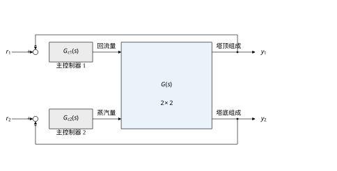
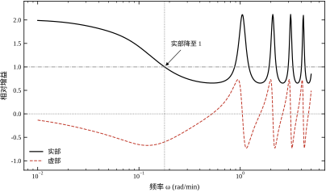
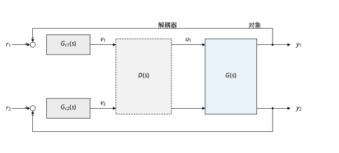
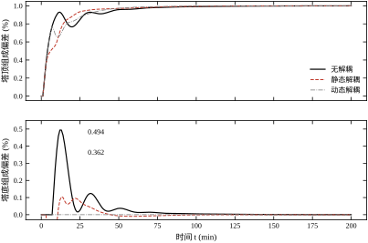
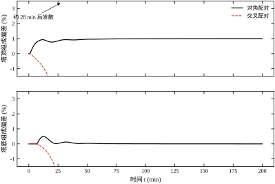
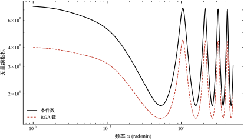
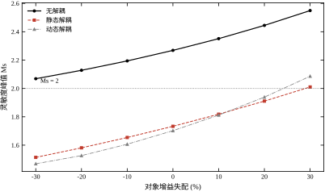
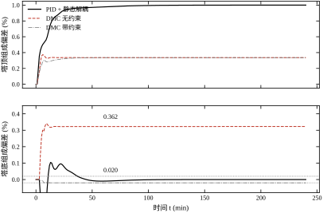
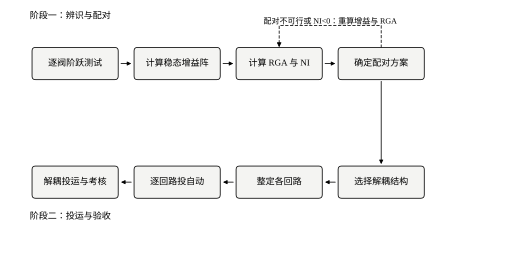

精馏塔是过程工业里最典型的多变量对象。塔顶组成与塔底组成是两个需要同时控制的质量指标，可用的操纵变量主要也是两个：回流量与再沸蒸汽量。按单回路的思路，很自然会配成“回流量控塔顶组成、蒸汽量控塔底组成”，然后分别整定两个 PID，各自看起来都很好。问题出在两个回路同时投自动之后。
用 Wood-Berry 模型可以把这个现象算清楚。该模型把塔顶组成 y_1、塔底组成 y_2 与回流量 u_1、蒸汽量 u_2 之间的关系写成四个一阶加纯延迟通道，其中塔顶组成对蒸汽量的增益是 -18.9，对回流量的增益只有 12.8。也就是说，单看开环，蒸汽阀对塔顶组成的影响比回流阀还大。如果只凭这条开环增益去配对，工程师应该用蒸汽阀去控塔顶组成，而不是回流量。
但现场的经验恰好相反：塔顶组成通常还是由回流量来控制。原因不在开环，而在闭环。当塔底组成回路也投自动时，蒸汽阀已经被那个回路“占住”了：回流阀一动，塔底组成跟着变，塔底回路立刻反向调整蒸汽量，这股反作用又通过 -18.9 的交叉通道传回塔顶，抵消掉一部分回流阀原本的效果。结果是，回流阀在“塔底回路闭合”的条件下对塔顶组成的有效增益只剩 6.37，不到开环值的一半。开环增益大，不等于闭合后还有效。
这就是多变量控制与单回路控制最根本的区别：一个操纵变量对某个被控量的作用，取决于其他回路在做什么。单回路整定把“其他回路”默认为手动、默认为常数；多变量设计必须把“其他回路也在动”这件事算进去。
现象一：两个回路单独都稳，一起投自动就振荡。 某催化裂化装置的吸收塔，用塔顶回流量控制干气中 C_3 以上组分，用塔底再沸量控制汽油蒸气压。两个回路分别投自动时，阶跃响应都干净，超调不到 10\%。同时投自动后，只要干气质量指标一动，两个阀就开始反相摆动，摆幅越来越大，最后只能把一个回路切回手动。用本章的模型复现这个现象：把配对换成“塔顶组成配蒸汽、塔底组成配回流”，并按单回路（另一回路手动）整定，两个回路同时闭合后约 28\ \mathrm{min} 就发散了。原因写在相对增益上：交叉配对的相对增益是 -1.009，负号意味着“另一回路闭合后，本回路的增益方向反了”，负反馈变成了正反馈。
现象二：一个阀饱和，另一个回路被拖偏。 反应器进料量突增时，冷却水阀很快开到上限，反应器温度仍在上升；温度控制器继续积分，积分项越积越大。等负荷回落、阀门重新可控时，积分项已经把阀位“记”在了全开位置，温度要反向冲过设定值很久才能把积分退掉。多变量情形下这个问题更隐蔽：一个阀饱和，另一个阀还在正常调节，但两个被控量通过交叉通道互相牵连，操作员看到的是“两个表都不对”，很难判断到底是哪个阀先饱和。
现象三：解耦器刚投很好，半年后反而更差。 解耦器是按某个工况的增益矩阵算出来的。原料性质、催化剂活性、换热器结垢都会让增益漂移。增益偏离设计值 30\% 时，静态解耦的灵敏度峰值从 1.73 升到 2.01，越过 2 这个工程门槛；此时解耦器不但没有帮忙，反而把交叉通道的偏差放大成了两个回路之间的持续摆动。现场最后的处理往往是把解耦器旁路掉，退回到“两个回路各自去整定”的状态。
三个现象对应三个层次的问题：配对错了会失稳，限幅处理错了会拖偏，模型漂了会让解耦反噬。本章的结构就按这三层展开。
多变量耦合不是数学上的偶然，它来自过程本身的守恒关系。
物料衡算。 回流量增加，塔内液气比整列变化，塔顶与塔底的分离效果同时改变。只要两个被控量共享同一股物料或同一个分离过程，耦合就不可避免。
能量衡算。 再沸蒸汽量改变全塔的热量输入，塔顶与塔底的温度分布一起移动。能量耦合通常比物料耦合更快，因为传热的时间常数小于塔板的停留时间。
设备共用。 两个回路共用一台泵、一根蒸汽母管、一个冷却水环时，一个阀的开度变化会改变母管压力，从而改变另一个阀实际获得的压差。这类耦合不在工艺流程图里，而在设备与管路的阻力特性里，最容易被漏掉。
测量链。 两台分析仪共用一套取样系统、同一个预处理柜时，取样滞后与样气流量波动会同时出现在两个测量值上。这时两个“独立”的回路实际上共享同一个扰动源。
工程上判断耦合是否值得处理，有一个粗略的量级标准：交叉通道的稳态增益达到主通道的 1/3 以上，或者交叉通道的延迟与主通道可比，就应该做多变量分析。Wood-Berry 模型的交叉/主增益比是 18.9/12.8=1.48 与 6.6/19.4=0.34，前者远超门槛，后者刚好在门槛附近，所以这个对象必须按多变量处理。
如果只记一句话：多变量控制的第一步不是设计控制器，而是回答“哪个阀管哪个表，这个答案在其他回路闭合之后还成不成立”；相对增益阵是这个问题的定量答案，解耦是对答案的修正，MPC 是把答案交给优化器。
图 108-1 给出本章的主对象：两个控制器分别驱动回流量与蒸汽量，两个被控量是塔顶与塔底组成。对象画成一个 2\times2 的方阵，四个元素分别对应四条通道。图中没有画出交叉连线，是因为交叉作用已经包含在矩阵的非对角元里；这是多变量框图与单回路框图在画法上的第一个区别。

§108.2 建立 2\times2 对象的闭环传递矩阵，给出相对增益的定义、性质与闭式解，说明解耦器的理想形式与可实现性，并用条件数刻画“这个对象有多难控”。§108.3 给出设计步骤：阶跃测试、算增益阵、算 RGA、定配对、选解耦、整定、投运。§108.4 与 §108.5 分别处理连续与离散实现，重点是解耦器的非因果分量与采样周期分配。§108.6 讨论稳定性与性能：负相对增益为什么会导致失稳、解耦器的鲁棒性边界在哪里。§108.7 逐参数说明配对、解耦增益、滤波时间、回路增益的作用方向与量级。§108.8 给现场整定顺序与经验值。§108.9 讨论部分解耦、阀位协调与 DMC/MPC 的分工，并给出约束下的对比数据。§108.10 是工程落地：RGA 现场计算、分析仪维护、故障降级、验收测试。§108.11 说明多变量 PID 与 MPC 的适用边界。§108.12 给出可直接运行的仿真代码。
以下内容本章不重复：PID 的基本形式与频域分解见第 44 章，简单回路的整定规则见第 106 章，串级、前馈、选择器等复杂回路的结构见第 107 章，Smith 预估的频域机理见第 47 章，MPC 的预测模型、滚动优化与稳定性理论见第 58 章与第 80 章。本章只在“多回路同时闭合”这个层面上引用它们。
本节只回答四个问题：两个回路同时闭合后，一个阀对被控量的作用还剩多少；这个“剩多少”能否用一个矩阵统一表示；解耦器要抵消什么、能抵消什么；对象本身的病态程度如何量化。
把图 108-1 的对象写成传递矩阵。输入是回流量与蒸汽量的偏差 u_1,u_2，输出是塔顶与塔底组成的偏差 y_1,y_2，四个通道都是一阶加纯延迟：
\begin{bmatrix}Y_1(s)\\Y_2(s)\end{bmatrix} =\begin{bmatrix}G_{11}(s)&G_{12}(s)\\G_{21}(s)&G_{22}(s)\end{bmatrix} \begin{bmatrix}U_1(s)\\U_2(s)\end{bmatrix} \tag{108-1}
本章的数值算例采用 Wood-Berry 模型，四个通道的参数列在表 108-1。该模型的增益单位是“组成百分点 / 阀位百分点”，时间单位是分钟，是精馏塔控制文献里使用最广的 2\times2 基准对象。
| 通道 | 含义 | 增益 | 时间常数 (min) | 纯延迟 (min) |
|---|---|---|---|---|
| G_{11} | 回流量 → 塔顶组成 | 12.8 | 16.7 | 1 |
| G_{12} | 蒸汽量 → 塔顶组成 | −18.9 | 21.0 | 3 |
| G_{21} | 回流量 → 塔底组成 | 6.6 | 10.9 | 7 |
| G_{22} | 蒸汽量 → 塔底组成 | −19.4 | 14.4 | 3 |
表 108-1 Wood-Berry 精馏塔模型的四个通道参数
两个控制器按对角结构配置，即 C=\mathrm{diag}(C_1,C_2)，C_1 用 y_1 算 u_1，C_2 用 y_2 算 u_2，测量按单位反馈处理。把 U=C(R-Y) 代入式 (108-1)，得到闭环：
Y=\left(I+GC\right)^{-1}GC\,R \tag{108-2}
式 (108-2) 的矩阵一般不是对角的。它的非对角元就是交互：r_1 变化时 y_2 会跟着变，变化的幅度由 (I+GC)^{-1}GC 的 (2,1) 元决定。单回路设计默认这个元为零，多变量设计必须正面处理它。
利用矩阵恒等式 (I+GC)^{-1}GC=I-(I+GC)^{-1}，式 (108-2) 还可以读成另一种形式：闭环矩阵等于“单位阵减去灵敏度矩阵”。灵敏度矩阵 (I+GC)^{-1} 的对角元刻画本回路跟踪误差被压小的程度，非对角元刻画一个回路的误差如何“漏”到另一个回路。第 107 章用标量灵敏度 S=1/(1+L) 讨论过串级与 Smith 预估，这里只是把它换成了矩阵。
Bristol 在 1966 年提出的相对增益，回答的是一个非常具体的问题：当其他回路都闭合时，通道 u_j\to y_i 的增益，相对于其他回路都手动时，变成了原来的几倍。
\lambda_{ij}= \frac{\left.\dfrac{\partial y_i}{\partial u_j}\right|_{\text{其他回路手动}}} {\left.\dfrac{\partial y_i}{\partial u_j}\right|_{\text{其他回路闭合}}} =\frac{g_{ij}}{\hat g_{ij}} \tag{108-3}
分子是开环增益，分母是“其他回路闭合”后的表观增益。两者都用稳态增益计算，所以式 (108-3) 是一个常数矩阵，与频率无关。把“其他回路闭合”的条件代入线性方程，可以证明式 (108-3) 等价于
\lambda_{ij}=g_{ij}\left(G^{-1}\right)_{ji} \tag{108-4}
式 (108-4) 是现场计算的依据：只要有了稳态增益矩阵 G(0)，求一次逆、再做元素级相乘，就得到相对增益阵。它不需要任何动态信息，也不需要仿真，这也是 RGA 能在 DCS 里被广泛使用的原因。
对 2\times2 对象，式 (108-4) 可以写成显式：
\lambda_{11}=\frac{g_{11}g_{22}}{g_{11}g_{22}-g_{12}g_{21}},\qquad \lambda_{12}=1-\lambda_{11} \tag{108-5}
代入表 108-1 的稳态增益：g_{11}g_{22}=12.8\times(-19.4)=-248.32，g_{12}g_{21}=(-18.9)\times6.6=-124.74，分母为 -123.58，于是
\Lambda=\begin{bmatrix}2.0094&-1.0094\\-1.0094&2.0094\end{bmatrix} \tag{108-6}
这个矩阵有两件事值得注意。第一，对角元的 2.0094 大于 1，说明对角配对虽然方向正确，但每个回路在其他回路闭合后，表观增益只有开环的一半左右：
\hat g_{11}=\frac{g_{11}}{\lambda_{11}}=\frac{12.8}{2.0094}=6.37,\qquad \hat g_{22}=\frac{g_{22}}{\lambda_{22}}=\frac{-19.4}{2.0094}=-9.65 \tag{108-7}
第二，非对角元是 -1.0094，负号意味着交叉配对（y_1 配蒸汽、y_2 配回流）在其他回路闭合后增益方向反转。任何按开环方向整定的控制器，一旦两个回路同时闭合，负反馈就变成正反馈。§108.1.2 中“约 28\ \mathrm{min} 发散”的仿真，正是这个负号的直接后果。
相对增益阵有三条可以直接用于决策的性质。
性质一：行和与列和都等于 1。
\sum_{j=1}^{n}\lambda_{ij}=1,\qquad \sum_{i=1}^{n}\lambda_{ij}=1 \tag{108-8}
这条性质提供了一个现场自检：算完 RGA 后逐行相加，若某行不等于 1，说明增益矩阵有错、单位不统一，或者某个通道的稳态还没到。它比任何理论校验都便宜。
性质二：\lambda 的数值直接对应交互强弱。
| \lambda_{ij} | 含义 | 处理 |
|---|---|---|
| =1 | 其他回路闭合后增益不变 | 该通道无交互，可独立整定 |
| 0<\lambda<1 | 表观增益变大 | 回路更激进，需去整定 |
| \lambda>1 | 表观增益变小 | 回路变迟钝，可适当加增益 |
| =0 | 其他回路闭合后该阀失效 | 不能配对 |
| <0 | 增益反号 | 禁止配对 |
| \to\infty | 对象在某工况奇异 | 不能在此工况运行 |
表 108-2 相对增益数值与配对决策
性质三：配对应使 \lambda 尽量接近 1，且必须为正。 Wood-Berry 的对角配对 \lambda=2.01，交叉配对 \lambda=-1.01，两者都不理想，但对角配对是唯一可用的方案。工程上 0.67<\lambda<1.5 认为交互可接受，\lambda>2 建议解耦或去整定，\lambda<0 一律禁止。
还有一个只适用于积分型对象的判据，即 Niederlinski 指数：
\mathrm{NI}=\frac{\det G(0)}{g_{11}(0)g_{22}(0)} \tag{108-9}
\mathrm{NI}<0 时，即使每个回路单独都稳定，按该配对同时闭合也必然积分失稳。Wood-Berry 的 \mathrm{NI}=(-123.58)/(-248.32)=0.4977>0，对角配对通过；交叉配对的 \mathrm{NI}=(-123.58)/(-124.74)=-0.9907<0，从判据上就被否决。NI 只判“会不会失稳”，不判“稳了以后性能如何”，所以 NI 通过不等于配对好，还要看 \lambda 离 1 有多远。
式 (108-4) 用的是稳态增益，但回路实际工作在某个带宽上。把 s 换成 j\omega，就得到频率相关的相对增益：
\lambda_{ij}(j\omega)=g_{ij}(j\omega)\left[G^{-1}(j\omega)\right]_{ji} \tag{108-10}
对 Wood-Berry 模型逐点计算 \lambda_{11}(j\omega) 的实部，结果列在表 108-3。频率从 0.01 升到 0.5\ \mathrm{rad/min} 时，实部从 1.989 单调降到 0.657，在 0.179\ \mathrm{rad/min} 处穿过 1。
| 频率 (rad/min) | 0.01 | 0.02 | 0.05 | 0.10 | 0.20 | 0.50 |
|---|---|---|---|---|---|---|
| \mathrm{Re}\,\lambda_{11} | 1.989 | 1.939 | 1.760 | 1.431 | 0.929 | 0.657 |
| 条件数 \kappa(G) | 7.374 | 7.114 | 6.283 | 5.251 | 3.445 | 1.683 |
表 108-3 相对增益与条件数随频率的变化
这张表说明两件事。第一，交互强度是频率的函数：在低频（长周期）交互强，在高频（短周期）交互弱，因为高频信号被对象的时间常数与延迟衰减掉了。第二，稳态 RGA 用于配对，带宽处的 RGA 用于判断交互是否落在闭环带宽内。本章两个回路的闭环时间常数约 10–16\ \mathrm{min}，对应的穿越频率约 0.06–0.10\ \mathrm{rad/min}，此处 \lambda_{11} 在 1.43–1.76 之间，仍明显大于 1，所以“对角配对 + 去整定或解耦”的结论在带宽内依然成立。
如果稳态 RGA 与带宽处 RGA 给出相反的配对建议，应以带宽处为准。这种情况在延迟差异很大的对象上会出现：稳态看某个通道增益很大，但它的延迟也大，在闭环带宽处已经被衰减，实际起作用的反而是另一个通道。
解耦的目标是让对象对控制器“看起来是对角的”。最直接的做法是在控制器与对象之间串一个矩阵 D(s)，使 G(s)D(s) 为对角阵。若要求解耦后主通道保持不变，则
D(s)=G(s)^{-1}\mathrm{diag}\bigl(g_{11}(s),g_{22}(s)\bigr) \tag{108-11}
对 2\times2 展开，对角线为 1，两个非对角元是
D_{12}(s)=-\frac{g_{12}(s)}{g_{11}(s)},\qquad D_{21}(s)=-\frac{g_{21}(s)}{g_{22}(s)} \tag{108-12}
式 (108-12) 的物理意义很直白：D_{12} 把 u_2 通道对 y_1 的影响，用 u_1 通道等量反向地抵消掉。它是一个前馈，前馈信号来自另一个控制器的输出。第 107 章讲过前馈的本质是“用模型预测扰动、提前补偿”，多变量解耦就是把“另一个回路的输出”当成可测扰动来做前馈。
把式 (108-12) 代入 G D，得
G D=\mathrm{diag}\left(g_{11},g_{22}\right) \tag{108-13}
这是理想情况。理想解耦要求模型完全准确，且 D 物理上可实现。两条都不容易满足，下一小节分别处理。
工程上最常用的是静态解耦：只要求稳态解耦，动态用滤波器和回路整定去吸收。令 D_0=G(0)^{-1}\mathrm{diag}(g_{11}(0),g_{22}(0))，则
G(0)D_0=\mathrm{diag}\left(\frac{g_{11}(0)}{\lambda_{11}},\frac{g_{22}(0)}{\lambda_{22}}\right) \tag{108-14}
对 Wood-Berry，D_0 的非对角元是 1.477 与 0.340，解耦后的对角增益是 6.37 与 -9.65，正好等于式 (108-7) 的表观增益。
这个结果值得停下来想一想：静态解耦并没有改变每个回路在稳态看到的增益，它只是把“其他回路闭合”造成的表观增益，提前用解耦器实现出来了。 换句话说，一个按表观增益整定好的 PID，与一个按开环增益整定再加静态解耦的 PID，在稳态上是同一回事；差别只在瞬态——解耦器把交叉通道的瞬态也部分抵消了，PID 只能等误差出现后再纠正。
这解释了 §108.6 的仿真结果：从无解耦到静态解耦，交互峰值从 0.494 降到 0.362，调节时间从 74\ \mathrm{min} 降到 64\ \mathrm{min}，改善是实实在在的，但没有“质变”。真正的质变要等动态解耦，交互峰值降到 0.001 以下。
把表 108-1 的参数代入式 (108-12)：
D_{12}(s)=1.477\,\frac{16.7s+1}{21s+1}e^{+2s},\qquad D_{21}(s)=0.340\,\frac{14.4s+1}{10.9s+1}e^{-4s} \tag{108-15}
D_{12} 含 e^{+2s}，即需要“提前 2\ \mathrm{min} 知道” u_2 的变化。这在因果系统里不可实现，除非有可测的扰动前馈信号。工程处理是把它丢掉，用 1.477(16.7s+1)/(21s+1) 近似。丢掉 e^{+2s} 后，在 0.1\ \mathrm{rad/min} 处引入的相位误差是 2\times0.1=0.2\ \mathrm{rad}\approx11.5^{\circ}，这正是动态解耦残留交互的来源。
D_{21} 含 e^{-4s}，是延迟，物理上可实现——在数字系统里就是延迟四个采样周期。它的超前滞后部分 (14.4s+1)/(10.9s+1) 是超前环节，高频增益为 0.340\times14.4/10.9=0.449，是低频增益 0.340 的 1.32 倍。这意味着解耦器会把 u_1 通道的高频噪声放大 32\%，在 §108.10 的分析仪噪声讨论中会再回到这一点。
对象“有多难解耦”可以用条件数衡量：
\kappa(G)=\frac{\bar\sigma(G)}{\underline\sigma(G)} \tag{108-16}
其中 \bar\sigma 与 \underline\sigma 是最大与最小奇异值。\kappa=1 表示各方向增益相同，求逆不会放大任何方向；\kappa 越大，G^{-1} 在弱方向上放的增益越大。Wood-Berry 在稳态的 \kappa=7.481，属于“中等病态”；到 0.5\ \mathrm{rad/min} 时降到 1.683，因为高频段四个通道都被惯性衰减，矩阵反而更“圆”。
条件数给出一个粗略的鲁棒性预算。设真实对象与模型相差 \|\Delta G\|\le\varepsilon\|G\|，则解耦后的残余耦合在一阶近似下满足
\left\|\Delta G\,D\right\|\lesssim \varepsilon\,\kappa(G) \tag{108-17}
取 \varepsilon=0.3、\kappa=7.48，乘积是 2.24，已经大于 1。这不是说系统一定失稳，而是说“按模型求逆的解耦器，其残余耦合与主通道同量级”，解耦的理论收益被模型误差吃掉了。§108.6 的灵敏度峰值数据会验证这个估计：增益失配 30\% 时，静态解耦的 M_s 从 1.73 升到 2.01。
本节的所有结论建立在五条假设上，任何一条不成立，数值结论都要打折扣。
线性时不变。 增益矩阵是在某个工作点附近线性化的。精馏塔在负荷 50\% 与 100\% 的增益可以差一倍，RGA 也随之变化。工程上要在常用工况分别算 RGA，若配对结论随工况翻转，说明这个对象不适合固定配对。
方系统。 输入数等于输出数。若输入多于输出（冗余操纵变量），RGA 仍然可算，但配对不再是排列问题，而是分配问题，需要先做阀位协调（§108.9）。若输入少于输出，只能选最重要的输出做控制，其余做软约束。
单位反馈、测量无动态。 分析仪本身的滞后与滤波会改变高频段的 RGA。若分析仪时间常数与对象主时间常数可比，应把测量动态并入 G 再算。
执行器线性、无饱和。 阀位限幅会把“线性解耦”变成“分段线性”，一个阀饱和时解耦关系立刻失效。§108.10 会给出饱和时的处理顺序。
稳态增益可测。 RGA 只用稳态增益，前提是每个通道都能做到稳态。对于积分对象（液位）或用时极长的通道，稳态增益要么不存在，要么测不起，此时要用频率相关 RGA 或直接做动态辨识。

图 108-2 把表 108-3 的实部与虚部画在一起。实部在 0.179\ \mathrm{rad/min} 处穿过 1，虚部在低频接近零、在高频变负，虚部的出现完全由四个通道的延迟差异造成。这张图是“稳态 RGA 够不够用”的直观判据：如果闭环带宽落在实部仍明显偏离 1 的区间，稳态配对结论有效；如果带宽落在实部已接近 1 的区间，交互在闭环里其实很弱，可以不解耦。
RGA 好用，但它只在四条前提下成立：线性、方系统、稳态、无模型误差。越过这四条，它给出的数就要打折扣。这一小节把边界讲清楚，并给出三条补充判据。
局限一：RGA 只用稳态增益，看不见动态。 两个配对的稳态 \lambda 可以都接近 1，但动态交互差别很大。极端情况下，某个配对的稳态交互很弱、动态交互很强（因为两条通道的时间常数差得远），按稳态 RGA 选出来的配对在闭环里反而不如另一个。判断办法是算频率相关 RGA，看闭环带宽处的 \mathrm{Re}\,\lambda 是否仍接近 1。本例在 0.1\ \mathrm{rad/min} 处 \mathrm{Re}\,\lambda_{11}=1.431，已经从稳态的 2.009 降下来一半，说明动态交互比稳态弱——这正是“稳态 RGA 偏保守”的典型表现。
局限二：3\times3 以上，配对是排列问题。 2\times2 只有两种配对，枚举即可。3\times3 有六种，4\times4 有二十四种，靠“每行挑最大的”会掉进局部最优。正确做法是把它当成指派问题：以 |\lambda_{ij}| 为收益、以“避开负值”为硬约束，用匈牙利算法求全局最优。工程上还有一个更实用的做法：先按“负 \lambda 排除 + 每行最大”得到一个候选，再手工检查“是否有一条通道的阀门权限不足”，因为 RGA 不知道阀门已经开到 95\%。
局限三：非方系统不能直接用。 输入多于输出时，G 不可逆，广义 RGA 要用伪逆定义，此时“行和为 1”不再成立，数值也不再落在 0 到 1 之间，解释起来很容易出错。这类对象应先做输入分配（§108.9.4），把非方问题化成方问题，再算 RGA。
局限四：RGA 对模型误差没有免疫力。 四个增益都是测出来的，每个都有 5\%–10\% 的误差。误差传到 \lambda 上会被放大：当 \det G 接近零时，\lambda 对增益误差极其敏感，算出来的 2.01 可能真值是 1.6 或 2.6。所以 RGA 的数值只应看“量级”，不应看“小数点后两位”——\lambda=2.0 与 \lambda=2.1 在工程上没有区别，\lambda=2.0 与 \lambda=1.1 才有。
补充判据一：RGA 数。 定义为 \sum_{i,j}|\lambda_{ij}|，2\times2 时就是四个元素绝对值之和。本例四个元素都接近 \pm2.009，所以 RGA 数是 4\times2.009=8.038。RGA 数等于 2 表示无交互，越大交互越强。它比单个 \lambda 更能反映“整体有多难控”，也便于在不同对象之间比较。
补充判据二：Niederlinski 指数。 \mathrm{NI}=\det G/(g_{11}g_{22})，只对选定配对有意义。本例 0.4977，为正；交叉配对的 NI 是 0.991，也为正，但交叉配对实际会发散（§108.6.1）。所以 NI 只能当“必要条件”用：NI 为负一定不能投，NI 为正不代表能投。
补充判据三：工程约束。 阀门权限（正常工况下开度是否在 30\%–70\%）、测量可信度（分析仪是否可用）、工艺优先级（哪个变量更关键）——这三条 RGA 都不知道，但往往比 RGA 更能决定配对。正确的顺序是“先用 RGA 排除不可行的配对，再用工程约束在剩下的里选”。 反过来，先按工艺偏好选定配对、再用 RGA “验证”，就变成了给结论找理由。
多变量回路的设计不是从整定开始的，而是从“测什么、怎么测”开始的。顺序错了，后面所有计算都会建立在错误的增益上。
工程上可执行的多变量设计分六步，前四步决定结构，后两步决定参数。
这六步里，第一步花的时间最长，也最容易做错；第三步只要几行矩阵运算，却能避免大部分结构性错误。
RGA 用的是开环增益，所以测试时除被激励回路外，其余回路必须放在手动。如果两个回路都在自动，测到的是“其他回路闭合”的表观增益，直接拿去算 RGA 会得到错误的结果。
以 Wood-Berry 对象为例，正确的测试步骤是：
四个通道、每个通道正反两次、每次约 2\ \mathrm{h}，一个完整的 2\times2 测试至少需要两个班次。这段时间不能省：用历史数据“凑”增益，往往把其他回路的调节动作当成了对象响应，RGA 会算出完全错误的符号。
还要区分“阀位”与“控制器输出”。阀门有死区、回差与限幅，控制器输出变化 5\% 不等于阀位变化 5\%。阶跃测试应记录阀位反馈；若阀门没有阀位反馈，至少要在测试前后校验阀门行程。
把四个稳态增益按“输出为行、输入为列”排成矩阵：
G(0)=\begin{bmatrix}12.8&-18.9\\6.6&-19.4\end{bmatrix} \tag{108-18}
有一个容易被忽略的性质：RGA 对输入与输出的各自缩放不变。用工程单位（\%、t/h、^\circ\mathrm{C}）还是用归一化单位（相对量程的百分比），只要每个输入、每个输出各自乘一个常数，RGA 不变。所以现场不必纠结单位统一，只要同一个通道的输入输出在两次测试中口径一致即可。
计算时先看行列式。Wood-Berry 的 \det G(0)=-123.58，绝对值不算小，说明对象在稳态不接近奇异。若 |\det G| 相对各元素明显偏小，说明两个通道近似线性相关，此时 RGA 元素会很大，任何配对都不可靠，应先检查是否有测点接错或阀门串气。
算完 RGA 后立刻做三件事：逐行求和是否为 1；非对角元是否出现负值；对角元是否远离 1。这三项检查能在三十秒内发现绝大多数数据错误。
2\times2 只有两种配对，逐一评估即可。对角配对（y_1–u_1、y_2–u_2）的 \lambda=2.01，交叉配对（y_1–u_2、y_2–u_1）的 \lambda=-1.01。按表 108-2 的规则，负值直接排除，所以选对角配对。
选完配对还要回答“要不要解耦”。判据不是只看 \lambda 的大小，而是把 \lambda 与闭环带宽放在一起看：
Wood-Berry 的 \lambda=2.01 落在第三档，所以本章的算例从“不解耦”开始，逐步加到静态解耦与动态解耦，用同一组控制器参数比较三种结构。
解耦结构按复杂度分四档，选择依据是“交互落在哪个频段”与“模型可信度”。
不解耦。 适用于 \lambda 接近 1、或交互主要发生在高频（被对象惯性衰减）。优点是零维护、鲁棒；缺点是两个回路会互相“看见”对方的设定值变化。
静态解耦。 只用一个常数矩阵，把稳态交叉通道抵消。适用于交互主要在低频、且工艺对稳态质量指标要求严格。它的参数少、可解释、漂移慢，是现场最常用的形式。
动态解耦。 用超前滞后与延迟把交叉通道的动态也抵消。适用于交互峰值大、恢复时间要求短。代价是参数多、对模型误差敏感、可能放大噪声。
部分解耦。 只抵消一条交叉通道（通常是增益大、延迟小的那条），另一条靠回路整定吸收。适用于两条交叉通道强弱悬殊的对象。Wood-Berry 的 G_{12} 增益是 G_{21} 的近三倍，若只想改一处，应先解 u_2\to y_1 这条。
整定时用表观增益，不用开环增益。Wood-Berry 的回路 1 应按 6.37 整定，而不是 12.8；回路 2 应按 -9.65 整定，而不是 -19.4。若误用开环增益，算出的 K_c 只有应有值的一半（0.119 而不是 0.238），投运后响应明显偏慢。麻烦在于这个“慢”很容易被误判为“整定保守”，操作工于是手动把增益加上去，加到两倍正好回到临界点，再往上就开始振荡。“先按开环增益整定、投运后再手动加快”是现场最常见的一条错误路径，它的危险不在于第一步错，而在于第二步的“补偿”没有量化依据。
投运顺序与第 107 章的复杂回路一致：先单回路、后解耦器；先手动、后自动；每次只改一个东西。具体是：两个回路都手动，确认阀位与测量正常；回路 2 投自动，做一次设定值阶跃，记录交互；回路 2 切回手动，回路 1 投自动，重复；两个回路都投自动，观察 30\ \mathrm{min}；最后投解耦器，再观察 30\ \mathrm{min}。任何一步出现持续摆动，退回上一步，不要同时调两个参数。
多变量回路的设计依据必须落成文档，否则半年后没人说得清解耦器为什么是这组系数。最小内容五项：对象模型表（四个通道的增益、时间常数、延迟与测试工况）、RGA 与 NI 的计算结果、配对结论与排除理由、解耦器结构与全部系数、各回路整定参数及其依据（按哪个表观增益、取多大滤波时间）。每项都要写“数据来源”与“测试日期”，因为增益会随催化剂、结垢、原料变化，文档的价值一半在数字，一半在“这些数字是什么时候的”。
阶跃测试做完，趋势图上有四条曲线，但真正要填进模型表的只有十二个数：四个稳态增益、四个时间常数、四个延迟。从曲线读出这十二个数，比“做测试”更容易出错，因为读数没有唯一答案，只有约定。
第一，增益的读法用“两段平均”而不是“看最后一点”。 阶跃前的稳态段取 10\ \mathrm{min} 平均，阶跃后的稳态段也取 10\ \mathrm{min} 平均（跳过前 2 个时间常数），两者相减除以阶跃幅值。直接读最后一个采样点会把噪声读进增益；Wood-Berry 的四个增益在 6.6 到 19.4 之间，若单点噪声有 0.2\% 的量程，增益误差就有 1\% 到 3\%，而 RGA 对增益误差是敏感的——g_{11} 偏 3\% 足以让 \lambda_{11} 从 2.009 变到 1.95 左右。
第二，稳态判据要写死在测试方案里。 常用判据是“连续 10\ \mathrm{min} 内被控量变化小于量程的 0.5\%”，同时“阀位变化小于 1\%”。两个条件缺一不可：只看被控量，会把“阀已经卡住、被控量靠自衡慢慢爬”误判成稳态；只看阀位，会在纯延迟段提前收工。
第三，时间常数用两点法，不用目测。 一阶加纯延迟的响应在 28.3\% 与 63.2\% 两个时刻的差正好等于时间常数，即 \tau=t_{63.2}-t_{28.3}。这两个百分数是阶跃幅度的比例，不是量程比例，换算时容易搞错。Wood-Berry 回路 1 的 \tau=16.7\ \mathrm{min}、\theta=1\ \mathrm{min}，按两点法只需读到 28.3\% 与 63.2 两个点，中间不必等完整稳态；完整稳态仍要等，是为了校核增益。
第四，测试时长按 3\tau+\theta 安排，实用值再加一半。 回路 1 的 3\tau+\theta=51\ \mathrm{min}，实用取 75 到 90\ \mathrm{min}；回路 2 的 3\tau+\theta=46\ \mathrm{min}，同样取 75\ \mathrm{min} 以上。测试太短，63.2\% 那一点还没到，时间常数只能外推；外推的误差几乎全部落在时间常数上，而时间常数又是整定公式的分母，误差会被整条回路继承。
第五，另一回路必须真的不动。 测 g_{11} 时回路 2 要手动且阀位锁定，不能只是“切手动”——手动状态下操作员仍可能为了保塔底而微调。测试记录里要写“回路 2 阀位固定于 47\%，全程未动”，这句话比“回路 2 手动”有用得多。若工艺不允许长时间锁定一个阀，就改用“小幅阶跃 + 短窗口”，幅值取正常调节量的两倍，窗口取 2\tau，用两点法读数，代价是信噪比下降。
第六，四组测试的次序有讲究。 先测对角两个通道（g_{11}、g_{22}），因为这两个决定主回路；再测交叉两个（g_{12}、g_{21}），因为交叉通道的增益小、信噪比差、需要更长的稳态段。每组之间留 30\ \mathrm{min} 让装置回到基准工况，否则前一次阶跃的余波会叠加到下一次的初值上。四组测完，用 \det G 做一次一致性检查：若 \det G 的符号与工艺常识相反（比如两个增益都为正却算出负行列式），多半是某一组测试的符号读反了。
最后把这十二个数填进模型表时，要同时填“不确定度”。增益的不确定度按重复测试的极差估，一般 3\% 到 5\%；时间常数的不确定度按两点法的读数误差估，一般 10\%。这两个数不是形式，它们决定了后面 RGA 与 M_s 的可信位数：5\% 的增益误差已经足以让 \lambda_{11} 移动 0.05，而 M_s 的工程门槛只留了 10\% 的余量。
连续情形是理解解耦器结构的地方。现场最终多半用数字实现，但数字实现只是把连续解耦器离散化，结构不变。
按式 (108-12) 与表 108-1，Wood-Berry 对象的解耦器为
D(s)=\begin{bmatrix} 1 & 1.477\dfrac{16.7s+1}{21s+1}e^{+2s}\\[8pt] 0.340\dfrac{14.4s+1}{10.9s+1}e^{-4s} & 1 \end{bmatrix} \tag{108-19}
对角线保持 1，意味着解耦器不改变主通道的稳态增益；两个非对角元分别是一条“滞后 + 预测”与一条“超前 + 延迟”。工程实现时，e^{+2s} 丢掉，e^{-4s} 用延迟环节实现，剩下两个一阶超前滞后环节：
D_{12}\approx1.477\frac{16.7s+1}{21s+1},\qquad D_{21}\approx0.340\frac{14.4s+1}{10.9s+1}e^{-4s} \tag{108-20}
图 108-3 给出解耦器与对象的串联结构。控制器输出先经过 D(s) 变成阀位指令，再进入对象。这个顺序不能反：解耦器必须作用在“控制器输出”与“阀门”之间，才能同时修改两个阀位。

用同一组控制器参数（\lambda_c=10\ \mathrm{min}，按表观增益整定，K_{c1}=0.238、T_{i1}=16.7\ \mathrm{min}，K_{c2}=-0.115、T_{i2}=14.4\ \mathrm{min}），对 r_1 施加 +1 的阶跃，三种结构的结果列在表 108-4。
| 结构 | 交互峰值 | 调节时间 (min) | 超调 (%) | 灵敏度峰值 M_s |
|---|---|---|---|---|
| 无解耦 | 0.494 | 74 | 0.00 | 2.269 |
| 静态解耦 | 0.362 | 64 | 0.00 | 1.733 |
| 动态解耦 | <0.001 | 55 | 0.00 | 1.702 |
| 交叉配对 | 发散 | — | — | — |
表 108-4 三种解耦结构的闭环性能（r_1 阶跃 +1，r_2 不变）
这张表有三个读法。
第一，静态解耦的收益是“减少”而不是“消除”。交互峰值从 0.494 降到 0.362，降幅 27\%；调节时间从 74\ \mathrm{min} 降到 64\ \mathrm{min}，降幅 14\%。这与 §108.2.7 的分析一致：静态解耦只修稳态，瞬态交互仍由对象动态决定。
第二，动态解耦的收益接近一个数量级。交互峰值降到 0.001 以下，调节时间再降到 55\ \mathrm{min}。原因是 D_{21} 的 e^{-4s} 恰好抵消了 u_1\to y_2 与 u_2\to y_2 的延迟差，v_1 对 y_2 的影响在动态上也被消掉了，回路 2 几乎不需要动作。
第三，三种结构的超调都是零。这不是解耦的功劳，而是 IMC 整定在 \lambda_c=10\ \mathrm{min} 下的固有特性：滤波器时间常数远大于延迟，闭环接近一阶。代价是调节时间偏长。若要更快，应减小 \lambda_c，而不是加大解耦器增益。
表 108-4 中动态解耦的交互峰值低于 0.001，这个数字在实际装置上几乎不可能出现。原因是仿真用了“模型完全准确、延迟精确到采样周期、阀门线性”的理想条件。真实装置至少有三处偏差：
因此，仿真里的“完美解耦”只能用来验证结构与代码，不能作为现场验收依据。现场验收要看的是“在最不利的增益失配下，M_s 是否仍然小于 2”，这正是 §108.6 的内容。

图 108-4 把表 108-4 的前三行画成时域曲线。上图是塔顶组成，三条曲线几乎重合，说明解耦对主通道的跟踪影响不大；下图是塔底组成，三条曲线的差别全部在这里。无解耦时塔底组成被抬起 0.494，静态解耦抬到 0.362，动态解耦几乎不动。这张图说明一个重要的工程判断：解耦的收益主要体现在“另一个被控量”上，主通道的改善是次要的。如果工艺只关心主变量、对另一个变量的短时偏差不敏感，解耦的收益就有限。
若因模型不可信、维护力量不足而不上解耦，可以用去整定换鲁棒性。做法是把按表观增益算出的回路增益再乘一个因子：
K_c=\alpha\,\frac{T_i}{K_{\text{eff}}\left(\lambda_c+\theta\right)},\qquad \alpha=0.6\sim0.8 \tag{108-21}
其中 K_{\text{eff}}=g_{ii}/\lambda_{ii} 是表观增益。\alpha 的作用是给交互留裕度：两个回路同时动作时，等效回路增益会比单回路整定时高，\alpha<1 把这部分增量预先扣掉。
需要说明的是，表 108-4 的“无解耦”一行用的是 \alpha=1，所以 M_s=2.269 略高于 2 的工程门槛。若取 \alpha=0.75，M_s 会降到 2 以下，代价是调节时间从 74\ \mathrm{min} 拉长到约 90\ \mathrm{min}。这是一笔明确的交易：用速度换稳定裕度。现场若没有把握维护解耦器，宁可取 \alpha=0.7，也不要把回路调到临界。
两条交叉通道强弱悬殊时，可以只解一条。以 Wood-Berry 为例，G_{12} 的增益是 G_{21} 的 2.86 倍，若只解 u_2\to y_1，解耦器变成上三角：
D(s)=\begin{bmatrix}1&D_{12}(s)\\0&1\end{bmatrix} \tag{108-22}
这样 y_1 不再受 u_2 影响，y_2 仍受 u_1 影响，但后者可以由回路 2 的积分作用慢慢纠正。单向解耦的优点是只有一个非对角元需要维护，模型误差的影响减半；缺点是回路 2 的负担加重，设定值变化时 y_2 的瞬态偏差比全解耦大。
选择单向还是全解耦，判据是“哪条通道的交互峰值超过工艺允许值”。若只有 y_1 对 u_2 敏感，就只解这一条；两条都超，才值得上全解耦。工程上“能少一个环节就少一个环节”，因为每个环节都是未来的故障点。
限幅位置。 解耦器的输出是两个阀位指令之和，必须在求和之后限幅，不能在每个分量上分别限幅。若 u_1=v_1+D_{12}v_2，先限 v_1 再相加，解耦器仍可能把总和推到量程外；先相加再限幅，至少保证最终阀位合法。
抗饱和归属。 一个阀饱和时，解耦器的另一路输出仍在变化，饱和回路的积分器会继续累积。正确做法是把限幅后的实际阀位反馈给两个控制器做回算（第 107 章式 (107-29)），而不是只反馈给“自己那一路”。多变量回算的简化做法是：任一阀饱和时，两个积分器同时暂停积分，等阀位回到可调区间再恢复。这会牺牲一点性能，但不会产生方向性的错误。
微分与滤波。 解耦器的超前环节会把测量噪声放大 1.32 倍（§108.2.8），所以控制器输入端必须加一阶滤波。滤波时间常数取采样周期的 2–5 倍，或取对象主导时间常数的 1/10，取两者中较大的。滤波太强会把解耦器的相位优势吃掉，太弱则阀位抖动。
初始化与无扰切换。 解耦器是有状态的（超前滞后与延迟），投运瞬间必须把内部状态初始化到“当前阀位对应的值”，否则会有一个阶跃。做法与第 107 章的选择器跟踪相同：解耦器旁路时，让其内部状态跟踪实际阀位；投入时从跟踪值开始，不产生跳变。
把式 (108-20) 的两个环节画成频率响应，会看到一件很重要的事：它们在低频与高频的增益是反的。
D_{12} 的低频增益是 1.477，高频增益是 1.477\times16.7/21=1.174，高频比低频小 21\%。它是“滞后”环节，频率越高补得越少。D_{21} 的低频增益是 0.340，高频增益是 0.340\times14.4/10.9=0.449，高频比低频大 32\%。它是“超前”环节，频率越高补得越多。
这个差别对闭环的影响正好相反。对象本身的耦合在高频段被惯性衰减（|g_{ij}(j\omega)|\to0），所以“补得少”是合理的——高频本来就不需要补那么多；而“补得多”就不合理了，它意味着解耦器在高频段把本该衰减的补偿量又抬了回去，等于给噪声开了一条路。
转折频率也值得算一下。D_{12} 的两个转折点是 1/21=0.048 与 1/16.7=0.060\ \mathrm{rad/min}；D_{21} 的是 1/14.4=0.069 与 1/10.9=0.092\ \mathrm{rad/min}。而本章闭环的穿越频率是 0.091\ \mathrm{rad/min}（§108.6.7）。D_{21} 的零点 0.092 几乎正落在穿越频率上，这意味着超前作用最强的频段，正好是闭环最敏感、噪声最容易被放大的频段。这不是巧合，是“用对象的时间常数做解耦器”的必然结果：解耦器的转折点由对象参数决定，闭环的穿越频率由整定决定，两者若落在同一频段，超前环节就会在“最不该放大”的地方放大。
工程上的三条推论：
这三条判据把“要不要动态解耦”从“看交互峰值”细化到了“看频段对齐”。交互峰值只告诉你耦合有多强，频段对齐才告诉你解耦器会不会帮倒忙。
现场的多变量控制器几乎都是数字实现的。解耦器、PID、MPC 全部跑在 DCS 或 PLC 的周期任务里，连续域的传递函数最终要换成差分方程。这一步在单回路里通常“照着公式抄一遍”就够了，在多变量里却有三个额外的问题：解耦器的超前环节对采样周期比 PID 更敏感；纯延迟必须取整到整数拍，取整误差直接变成解耦误差；离散化本身引入的相位会改变两条交叉通道的抵消程度。
正确的次序是“先在连续域设计，再离散实现”，而不是“先离散，再在 z 域里重新设计”。理由有三条。
第一，连续域的结构判据（RGA、NI、条件数）都是代数判据，与采样周期无关。若先离散，这些判据要重新推导一遍 z 域版本，收益为零。
第二，连续域的整定公式（式 108-21）已经把延迟与时间常数写进去了，工程上可以直接对着 PID 组态填写。离散域整定要额外处理采样周期，公式反而更长。
第三，离散化误差本身需要评估。先有连续设计，才能把“离散实现与连续设计的差别”当成一个可量化的误差项来检查；若一开始就在 z 域设计，就没有参照物，误差被埋在参数里看不见。
所以本节的组织是：连续解耦器已经由 §108.4 给出，这里只做三件事——把它变成差分方程、评估取整与相位误差、给出采样周期的选择判据。
一阶超前滞后环节用双线性变换（Tustin）离散：
s\approx\frac{2}{T_s}\cdot\frac{1-z^{-1}}{1+z^{-1}} \tag{108-23}
代入 D(s)=k(\tau_1s+1)/(\tau_2s+1)，整理成可直接编程的差分方程：
a_0y_k=b_0u_k+b_1u_{k-1}-a_1y_{k-1} \tag{108-24}
其中
a_0=\frac{2\tau_2}{T_s}+1,\quad a_1=1-\frac{2\tau_2}{T_s},\quad b_0=k\left(\frac{2\tau_1}{T_s}+1\right),\quad b_1=k\left(1-\frac{2\tau_1}{T_s}\right)
把表 108-1 的参数与 T_s=1\ \mathrm{min} 代入，得到表 108-5。
| 环节 | a_0 | a_1 | b_0 | b_1 |
|---|---|---|---|---|
| D_{12} | 43.0000 | -41.0000 | 50.7937 | -47.8406 |
| D_{21} | 22.8000 | -20.8000 | 10.1381 | -9.4577 |
表 108-5 两个超前滞后环节的 Tustin 系数（T_s=1\ \mathrm{min}）
这张表有两个值得注意的地方。
其一，系数是“大数相减”结构。a_0 与 |a_1| 只差 2，b_0 与 |b_1| 只差 2k。当 T_s 继续减小时，这两个差保持不变，而系数本身按 1/T_s 增长，定点运算的舍入误差会被同比放大。若控制器用 16 位定点实现，T_s=1\ \mathrm{min} 时系数已到 50，余量不大；若 T_s=0.1\ \mathrm{min}，系数到 500 量级，必须改用浮点或 32 位定点。现场遇到“解耦器输出有细小的锯齿”，先查这一条。
其二，D_{12} 的系数比 D_{21} 大一倍多，因为它同时带着 1.477 的增益与 16.7/21 的滞后比。这意味着 D_{12} 这条通道在数值上更“重”，定点实现时它的舍入误差对闭环的影响也更大。若只能给一条通道更高的精度，应给 D_{12}。
D_{21} 含 e^{-4s}，数字实现就是延迟 N 拍：
N=\mathrm{round}\left(\frac{\theta}{T_s}\right),\qquad \theta_{\text{实}}=NT_s \tag{108-25}
取整误差 \theta_{\text{实}}-\theta 随 T_s 变化，结果列在表 108-6。
| T_s (min) | N | 实际延迟 (min) | 误差 (min) |
|---|---|---|---|
| 0.5 | 8 | 4.0 | 0.0 |
| 1.0 | 4 | 4.0 | 0.0 |
| 2.0 | 2 | 4.0 | 0.0 |
| 3.0 | 1 | 3.0 | -1.0 |
| 5.0 | 1 | 5.0 | +1.0 |
表 108-6 延迟取整误差随采样周期的变化（需延迟 4\ \mathrm{min}）
表 108-6 说明一件很实际的事：4\ \mathrm{min} 的延迟在 T_s=3\ \mathrm{min} 时只能实现 3\ \mathrm{min}，误差 25\%。这个 25\% 的延迟误差会直接变成解耦残差——本来应该“晚 4\ \mathrm{min} 补”，实际“晚 3\ \mathrm{min} 补”，补的动作提前了一分钟，在 y_2 上留下一个先负后正的鼓包。现场若看到“解耦器投运后另一个变量先反向动一下再回来”，先怀疑延迟取整，而不是怀疑增益。
反过来，T_s=5\ \mathrm{min} 时延迟实现成 5\ \mathrm{min}，补的动作晚了一分钟，残差方向相反。这也解释了为什么同一套解耦参数换一套 DCS（周期不同）后表现会变。
工程上的处理原则是：延迟取整的相对误差控制在 10\% 以内。对 4\ \mathrm{min} 的延迟，这意味着 T_s\le0.4\ \mathrm{min}；若做不到，就不要用动态解耦，退到静态解耦——静态解耦没有延迟环节，不受取整影响。这条原则比“采样周期取时间常数的十分之一”更严格，因为在解耦器里延迟误差是“直接减在抵消项上”的。
数字实现还有两处相位误差，都不大，但要知道量级。
零阶保持。 控制器输出在一个采样周期内保持不变，等效于串了一个 T_s/2 的纯延迟，相位滞后为 \omega T_s/2。T_s=1\ \mathrm{min} 时，0.05\ \mathrm{rad/min} 处滞后 1.43^{\circ}，0.1\ \mathrm{rad/min} 处 2.86^{\circ}，0.5\ \mathrm{rad/min} 处 14.32^{\circ}。与 §108.2.8 里“丢掉 e^{+2s} 造成 11.5^{\circ}”相比，在 0.1\ \mathrm{rad/min} 处零阶保持只是它的四分之一，可以忽略；但在 0.5\ \mathrm{rad/min} 处已经超过它。
Tustin 频率畸变。 双线性变换把连续频率 \omega 映射成 \omega_d=\frac{2}{T_s}\tan(\omega T_s/2)，两者之比在 0.1\ \mathrm{rad/min} 处是 1.0008，在 0.5\ \mathrm{rad/min} 处是 1.0214。也就是说，T_s=1\ \mathrm{min} 时 Tustin 在常用带宽内几乎没有畸变；只有当 \omega T_s 超过 0.5 时才需要预畸变（把设计频率先按 \frac{2}{T_s}\arctan(\omega T_s/2) 折算）。
两条合起来给一个结论：在 T_s=1\ \mathrm{min}、闭环带宽 0.1\ \mathrm{rad/min} 的条件下，离散化引入的相位误差约 3^{\circ}，远小于模型误差与丢预测造成的 11.5^{\circ}。 所以本章的仿真直接用 T_s=1\ \mathrm{min}，不额外补偿；若现场把周期放到 5\ \mathrm{min}，这两项会一起变成 15^{\circ} 量级，就必须重新评估。
单回路的经验是“采样周期取主导时间常数的 1/10 到 1/20”，多变量要加两条约束。
约束一：最小时间常数。 解耦器的超前环节由 (\tau_1s+1)/(\tau_2s+1) 构成，其零点在 1/\tau_1。若 T_s 与 \tau_1 可比，超前环节的零点在离散域里会跑到 z 平面的负实轴附近，产生“一拍正、一拍负”的交替输出。Wood-Berry 的最小时间常数是 10.9\ \mathrm{min}，取 T_s\le1.09\ \mathrm{min} 是安全的，这也正好是本章取 T_s=1\ \mathrm{min} 的原因。
约束二：闭环带宽。 要求
\omega_cT_s<0.5 \tag{108-26}
\omega_c 取闭环 -3\ \mathrm{dB} 带宽。\lambda_c=10\ \mathrm{min} 时闭环带宽约 0.09\ \mathrm{rad/min}，T_s=1\ \mathrm{min} 时 \omega_cT_s=0.09，余量五倍以上。若把 \lambda_c 压到 2\ \mathrm{min}，带宽升到 0.45\ \mathrm{rad/min}，\omega_cT_s=0.45，已经贴着判据，此时要么减小 T_s，要么接受相位裕度损失。
约束三：延迟取整。 已在 §108.5.3 给出，T_s\le0.1\theta。
三条约束取最严的一条。Wood-Berry 的算例里，约束一给出 1.09，约束二给出 5.5，约束三给出 0.4。若用动态解耦，T_s 应取 0.4\ \mathrm{min} 而不是 1\ \mathrm{min}；本章为了与前面的连续设计对齐、并与教科书的 Wood-Berry 结果可比，仍取 T_s=1\ \mathrm{min}，并在表 108-6 里明确标出“延迟取整误差为零”——4 能被 1 整除，恰好躲过了这条约束。这是一个应该讲清楚的巧合，不是普遍规律。
离散 RGA。 把 s=j\omega 换成 z=e^{j\omega T_s}，G(z) 由 G(s) 离散得到，相对增益阵仍按同一公式计算：
\Lambda(z)=G(z)\circ\left[G(z)^{-1}\right]^{T} \tag{108-27}
其中 \circ 表示逐元素相乘。T_s=1\ \mathrm{min} 时，\Lambda(e^{j\omega T_s}) 与连续域的 \Lambda(j\omega) 在 0.1\ \mathrm{rad/min} 以下的差别小于 1\%，所以本章的频率相关 RGA 直接用连续公式算（表 108-3），不再单独列离散结果。但要注意：这个等价性依赖 T_s 足够小。若 T_s=5\ \mathrm{min}，0.2\ \mathrm{rad/min} 处 \omega T_s=1，离散 RGA 与连续 RGA 会明显分开，此时必须用式 (108-27) 重算。
MPC 的采样与预测步长。 DMC 的三个整定参数是采样周期 T_s、预测步数 P、控制步数 M。它们不是独立的：
这三条与第 58 章、第 80 章的 MPC 参数选择原则一致，这里只是把它们与多变量对象的耦合结构对上。第 58 章讲的是预测控制的一般框架，第 80 章讲的是工业 MPC 的工程实现，本节不重复推导。
差分方程编好之后，投运前应该做一次“手算校验”：给解耦器一个单位阶跃输入，看前几拍的输出是否与手算一致。这一步只要五分钟，却能发现系数抄错、采样周期填错、状态未清零这三类低级错误。
单位阶跃下，D_{12} 的前八拍输出是
1.1812,\ 1.1950,\ 1.2081,\ 1.2206,\ 1.2325,\ 1.2438,\ 1.2547,\ 1.2650
它从 1.181 单调上升到 1.477 的方向，符合“滞后环节”的形状。D_{21} 的前八拍是
0.4447,\ 0.4355,\ 0.4271,\ 0.4195,\ 0.4126,\ 0.4062,\ 0.4004,\ 0.3951
它从 0.445 单调下降到 0.340 的方向，符合“超前环节”的形状。
首拍值有解析式：由式 (108-24) 令 y_{-1}=0、u_0=1、u_{-1}=0，得 y_0=b_0/a_0。对 D_{12}，b_0/a_0=50.7937/43.0000=1.1812；对 D_{21}，10.1381/22.8000=0.4447。这两个数还可以用高频增益近似核对：1.477\times16.7/21=1.174 与 0.340\times14.4/10.9=0.449，与首拍值的偏差分别是 0.6\% 与 1.0\%——偏差来自 Tustin 变换在奈奎斯特频率附近的畸变，属于正常范围。
现场校验的做法是：解耦器切手动，把内部状态清零，给输入一个 10\% 的阶跃，读第一拍的输出。若读数是 0.118\times10\%=1.18\%（对 D_{12}），说明系数与采样周期都对；若读到 0.148 或 0.117，说明系数或 T_s 抄错了。这个校验比看闭环响应快得多，因为它把“对象、控制器、解耦器”三者拆开了，只看解耦器本身。
同样的差分方程，在不同的 DCS 里算出来的结果可能不同，差别来自两处：系数存了几位，以及多久算一次。这两处都不在算法层面，却足以让解耦器“看起来不工作”。
系数精度。 D_{12} 的四个系数是 a_0=43.0000、a_1=-41.0000、b_0=50.7937、b_1=-47.8406。稳态增益由 (b_0+b_1)/(a_0+a_1) 决定，等于 2.9531/2.0000=1.4766。若组态软件只允许存两位小数，b_0,b_1 变成 50.79 与 -47.84，和变成 2.95，稳态增益变成 1.4750，误差 0.11\%，可以接受。若只允许存一位小数，变成 50.8 与 -47.8，和是 3.0，稳态增益 1.5000，误差 1.6\%——这个量级已经不能忽略：它相当于把解耦器的静态增益从 1.477 抬到 1.5，与增益失配 3\% 的效果相同，而表 108-7 告诉我们 +30\% 失配就把 M_s 从 1.733 推到 2.010。经验规则：系数至少保留三位小数，或用整数放大 1000 后存储。
极点位置的自检。 一阶环节的极点由 -a_1/a_0 决定，对应的时间常数是 -T_s/\ln(a_1/a_0)。D_{12} 的 41/43=0.9535，反算时间常数 21.0\ \mathrm{min}，正好是 g_{12} 的 \tau，也就是解耦器分母取的那个时间常数；D_{21} 的 20.8/22.8=0.9123，反算 10.9\ \mathrm{min}，正好是 g_{21} 的 \tau。两个都对得上，说明系数没有张冠李戴。这个自检比看阶跃响应更直接：填完四个系数，先算 -a_1/a_0，再反算时间常数，与对象参数表一比就知道。离散化最容易犯的错不是公式错，而是把两个环节的系数对调。
顺序不能颠倒。 一个周期内的正确顺序是“先算 PID、再算解耦、最后限幅”：解耦器的输入必须是控制器未经限幅的输出 v，它才能算出正确的补偿量；限幅只作用在最终的阀位 u 上，并把限幅后的实际值回送给两个控制器做回算（§108.4.6）。若把限幅提前到解耦之前，等于把 v 当成 u 来钳位，量纲和物理含义都不对——v 是“控制器的意愿”，u 才是“阀门的开度”，两者的限幅值不是同一个数。现场若看到“饱和时另一路反而偏得更远”，多半就是这个顺序做反了。
执行周期。 解耦器必须与 PID 同周期或更快，不能更慢。若 PID 每 1\ \mathrm{min} 算一次、解耦器每 2\ \mathrm{min} 算一次，等效于在解耦通道上多加了 0.5\ \mathrm{min} 的纯延迟；在穿越频率 0.0909\ \mathrm{rad/min} 处，这 0.5\ \mathrm{min} 换来 0.0455\ \mathrm{rad}，即 2.6^\circ 的相位滞后。单看 2.6^\circ 不大，但它加在本已紧张的相位裕度上，而且只加在交叉通道、不加在主通道，会破坏“两条通道相位对齐”这个解耦前提。工程上的做法是把解耦器与 PID 放进同一个任务块，按同样周期顺序执行，宁可多花一点 CPU，也不要拆成两个周期。
定点运算的截断。 老 DCS 用 16 位定点，系数放大 1000 后是 50794 这样的整数，乘法结果要右移 10 位。右移是截断而不是四舍五入，长期运行会在大偏差时产生“少一点”的系统性偏差。检查方法是：给解耦器一个恒定的输入，看输出是否稳定在理论值上，若缓慢爬升或下沉，就是截断累积。新系统多用浮点，这个问题消失，但换来了“系数量化到几位”的问题，两者是同一件事的两面。
多变量回路的稳定性不能靠“每个单回路都稳”来保证。两个各自稳定的回路，闭合后可能发散；这不是整定得不好，而是结构决定的。本节先用配对把结构性失稳讲清楚，再用灵敏度峰值把“解耦器的鲁棒性”量化。
先看现象。用同一套整定规则（\lambda_c=10\ \mathrm{min}，控制器方向按各自“主通道”的开环增益符号确定），对角配对的两个回路闭合后收敛，交叉配对的两个回路闭合后在第 28\ \mathrm{min} 附近开始发散，到仿真结束时 |y| 已经到 317。同样的对象、同样的控制器结构、同样的整定规则，唯一的差别是把 y_1 接到 u_2、y_2 接到 u_1。
原因在符号。交叉配对下，回路 1 的“主通道”是 g_{12}=-18.9，回路 2 的“主通道”是 g_{21}=6.6，两个都是负、正相反的符号。按单回路整定，控制器 1 取正作用、控制器 2 取反作用，各自单投都稳。但闭合后，回路 1 的动作通过 g_{22} 影响 y_2，回路 2 的动作通过 g_{11} 影响 y_1，这两条交叉通道的符号与“主通道”同向，形成正反馈。用 RGA 的语言说，交叉配对的 \lambda=-1.009，负号就是“闭合另一个回路后，本回路的表观增益反号”。
这里有一个容易误判的地方：交叉配对的 Niederlinski 指数是 0.991，也是正的。NI 判据只对“你选定的那个配对”计算，它检查的是“这个配对在稳态是否必然积分失稳”，而交叉配对的失稳是动态过程，NI 判不出来。真正拦住交叉配对的是负 RGA，不是 NI。

图 108-5 把两种配对的响应画在一起。对角配对的两条曲线在 74\ \mathrm{min} 内进入 \pm2\% 带；交叉配对的两条曲线在前 20\ \mathrm{min} 看起来“反应更快”，然后一起向上翘，第 28\ \mathrm{min} 后超出纵轴范围。这个“先快后炸”的形状很有代表性：正反馈在初期表现为“增益变大”，看起来响应更好，等到积分器把误差累积起来就收不住了。
工程上的教训是：配对不能靠“试出来”，必须先用 RGA 算一遍符号。 试凑法在两个回路都投自动时已经没有安全边界——等到看见发散，阀位往往已经跑到限幅。
配对确定后，剩下的问题是“这套参数能容忍多大的模型误差”。单回路用增益裕度与相位裕度，多变量用灵敏度矩阵的奇异值：
M_s=\max_{\omega}\bar\sigma\left[S(j\omega)\right],\qquad S(j\omega)=\left[I+G(j\omega)D(j\omega)C(j\omega)\right]^{-1} \tag{108-28}
S 是灵敏度矩阵，\bar\sigma 是最大奇异值。M_s 的物理意义是“最坏方向上，扰动被放大多少倍”。M_s=1 表示任何频率、任何方向的扰动都不被放大；M_s=2 表示最坏方向放大一倍，对应约 6\ \mathrm{dB} 的稳定裕度损失。工程门槛取 M_s<2，与单回路“增益裕度大于 6\ \mathrm{dB}”是同一量级的要求。
M_s 比“逐回路看增益裕度”严格，因为它看的是最坏方向。两个回路各自的裕度都够，但两个回路的动作在某些频率上同向叠加，M_s 就可能超标。多变量系统里“最坏方向”通常是两个阀同开同关的方向，也就是条件数最大的那个方向——这就把 M_s 与 §108.2.9 的条件数联系起来了。
§108.2.9 给出的鲁棒性预算是 \|\Delta GD\|\lesssim\varepsilon\kappa(G)。这个式子只用了稳态条件数，是一个“粗估”；M_s 用了全频段信息，是“精算”。两条口径应该给出同一个结论，否则说明模型或计算有问题。
Wood-Berry 的稳态条件数是 7.481，随频率下降：0.05\ \mathrm{rad/min} 处 6.283，0.1\ \mathrm{rad/min} 处 5.251，0.5\ \mathrm{rad/min} 处 1.683。图 108-6 把条件数与 RGA 数（\sum|\lambda_{ij}|）画在同一张双对数图上，两条曲线同步下降，说明“病态程度”与“交互强度”是同一件事的两个侧面。

这张图给了一个有用的判据：如果闭环带宽落在条件数已经明显下降的频段，多变量设计的难度会小很多。 本例带宽约 0.09\ \mathrm{rad/min}，条件数从稳态的 7.48 降到 5.4 左右，降幅不大，所以“难”是贯穿带宽的；若对象的条件数在 0.05\ \mathrm{rad/min} 就从 20 掉到 2，那么只要把带宽压在 0.05 以上，就可以不解耦。
粗估与精算的对照是这样的：取 \varepsilon=0.3，粗估给 0.3\times7.48=2.24>1，结论是“解耦的理论收益会被误差吃掉”；精算在标称模型下给静态解耦 M_s=1.733、动态解耦 1.702，都还在 2 以内。两者不矛盾——粗估说的是“残余耦合与主通道同量级”，精算说的是“同量级的残余耦合还不至于让闭环失稳”。粗估用来判断“要不要上解耦”，精算用来判断“上了以后还能不能投”。
把 g_{11} 与 g_{22} 同时乘一个因子 (1+\varepsilon)，\varepsilon 从 -30\% 扫到 +30\%，重新算 M_s 与交互峰值，结果列在表 108-7。
| 增益失配 | 无解耦 M_s | 静态解耦 M_s | 动态解耦 M_s | 静态解耦交互峰值 |
|---|---|---|---|---|
| -30\% | 2.069 | 1.514 | 1.469 | 0.691 |
| -20\% | 2.128 | 1.581 | 1.526 | 0.299 |
| 0 | 2.269 | 1.733 | 1.702 | 0.362 |
| +20\% | 2.445 | 1.911 | 1.939 | 0.421 |
| +30\% | 2.549 | 2.010 | 2.086 | 0.448 |
表 108-7 增益失配对 M_s 与交互峰值的影响（r_1 阶跃 +1）
这张表有四个读法。
第一，标称模型下解耦确实改善了鲁棒性。 M_s 从无解耦的 2.269 降到静态解耦的 1.733、动态解耦的 1.702。这一点常被忽略：解耦不只是“减交互”，它还把闭环的最坏方向“拉平”了，因为没有解耦时两个回路的动作会互相激励。
第二，无解耦在标称点就已经超标。 M_s=2.269>2，说明按表观增益整定、取 \alpha=1 时，这条回路本来就在门槛之外。这不是“解耦救了你”，而是“不解耦就得去整定”。§108.4.4 的 \alpha=0.75 就是为这种情况准备的。
第三，失配是不对称的。 负失配 -30\% 时静态解耦的交互峰值是 0.691，正失配 +30\% 时是 0.448。原因在解耦器的系数是固定的：D_{12}=1.477 是按标称增益算的，当 g_{11} 变小而 g_{12} 不变时，真实的 -g_{12}/g_{11} 变大，D_{12} 就“补少了”；反过来 g_{11} 变大时 D_{12} “补多了”。补少了留下的是同向残差，补多了留下的是反向残差，两者对 y_2 的影响不对称。现场若发现“降负荷时交互变大、提负荷时交互变小”，就是这一条。
第四，失配到 \pm25\% 附近就摸到门槛。 静态解耦的 M_s 在 +20\% 时是 1.911，+30\% 时是 2.010，门槛落在两者之间；动态解耦在 +20\% 时已经 1.939，+30\% 时 2.086。也就是说，动态解耦的参数更多、标称性能更好，但它的鲁棒性并不比静态解耦强。这条结论与很多人的直觉相反，值得强调：多一个环节不等于多一分稳健，动态解耦把模型误差从“增益失配”扩展到了“增益 + 时间常数 + 延迟”三类失配，总误差反而更大。

图 108-7 把表 108-7 的三条 M_s 曲线画出来，横轴是失配，纵轴是 M_s，虚线是 M_s=2 的工程门槛。三条线都随失配绝对值上升，但斜率不同：无解耦的斜率最平（因为它本来就在 2.3 附近），静态解耦最陡。这意味着解耦器在标称点省下的裕度，会在失配时加倍还回去。选解耦方案时不能只看标称点的 M_s，要看“失配到工艺可能的最大值时的 M_s”。
稳定性用 M_s，性能用什么？单回路常用超调、调节时间、上升时间。多变量还要加一个“交互峰值”，定义为阶跃响应中“另一个被控量”相对其终值的最大偏差。
这四个指标在多变量里会互相牵制。以本章的数据为例：\lambda_c=10\ \mathrm{min} 时超调为零、调节 64\ \mathrm{min}、交互 0.362、M_s=1.733；\lambda_c=5\ \mathrm{min} 时调节缩到 47\ \mathrm{min}，但超调升到 8.55\%、交互升到 0.578、M_s 升到 2.627。把调节时间压下去 27\%，代价是 M_s 超出门槛 31\%。 这不是“调得好不好”的问题，是“要不要”的问题。
工程上建议按下面的优先级选指标：
这个顺序不能反。先压调节时间、再看 M_s，往往会发现“没有可行解”，然后被迫回到第一步重来。
把上面的结论合起来，多变量回路有一条与单回路相同的取舍律：响应速度、鲁棒性、解耦精度三者最多取其二。
现场最常选的是第一项或第三项。第二项只在两种情况下可接受：对象模型经过在线辨识持续更新（§108.9），或者工艺允许短时超差、有下游缓冲罐吸收。
最后要说清楚一点：本章的所有 M_s 都是线性模型下的值。阀门死区、变送器量化、分析仪滞后都会让实际裕度比计算值小。工程上的习惯是把门槛从 2 收到 1.8，留 10\% 给未建模动态。若计算值已经在 1.9，就不要指望现场还能“调出来”。
多变量回路里，“闭环有多快”最直接的度量是穿越频率 \omega_c，即开环增益为 1 的频率。本章的四组参数给出的 \omega_c 列在表 108-8 的最后一列：\lambda_c=5 时 0.1667，10 时 0.0909，20 时 0.0476，40 时 0.0244\ \mathrm{rad/min}。
这四个数有一个漂亮的规律：\omega_c=1/(\lambda_c+\theta)。验证一下：1/(5+1)=0.1667，1/(10+1)=0.0909，1/(20+1)=0.0476，1/(40+1)=0.0244，与仿真值完全一致。
这个公式不是巧合，可以从整定式推出来。按式 (108-21)，K_c=\tau/[k_{\text{eff}}(\lambda_c+\theta)]；PI 的积分时间取 T_i=\tau，于是
L(s)=K_c\left(1+\frac{1}{\tau s}\right)\cdot\frac{k_{\text{eff}}e^{-\theta s}}{\tau s+1} =\frac{e^{-\theta s}}{(\lambda_c+\theta)s} \tag{108-35}
PI 的零点 1/\tau 正好抵消对象的极点 1/\tau，剩下的就是“一个积分 + 一个延迟”。令 |L(j\omega_c)|=1，立刻得到 \omega_c=1/(\lambda_c+\theta)。这是 IMC-PI 整定最实用的一条副产品：看一眼 \lambda_c 与 \theta，就能估出闭环带宽。
用它可以把 §108.5.5 的采样判据写成更直接的形式。把 \omega_c=1/(\lambda_c+\theta) 代入 \omega_cT_s<0.5：
T_s<\frac{\lambda_c+\theta}{2} \tag{108-36}
本例 \lambda_c=10、\theta=1，给出 T_s<5.5\ \mathrm{min}，与 §108.5.5 的结果一致。这条式子的好处是把“采样周期”与“整定参数”直接挂钩：若想把回路调快一倍（\lambda_c 减半），采样周期也必须跟着减半，否则离散化的相位误差会吃掉调快带来的收益。
这个公式还能解释一件反直觉的事。四组参数的相位裕度分别是
90^{\circ}-\frac{\theta}{\lambda_c+\theta}\cdot\frac{180^{\circ}}{\pi} =80.5^{\circ},\ 84.8^{\circ},\ 87.3^{\circ},\ 88.6^{\circ}
全部大于 80^{\circ}，看起来“裕度充足”。但同一组参数下 M_s 从 1.159 涨到 2.627，\lambda_c=5 时已经明显超标。单回路的相位裕度在多变量系统里几乎没有诊断力——因为裕度的损失不在“回路 1 自己”的频响上，而在“两个回路同向动作”的那个方向上。这就是为什么多变量设计必须用 M_s，不能沿用单回路的“看相位裕度”。
最后一条实用推论：\theta 越大，\omega_c 的上限越低。若某个对象的延迟是 20\ \mathrm{min}，无论怎么减小 \lambda_c，\omega_c 也超不过 1/20=0.05\ \mathrm{rad/min}——这就是“延迟决定带宽上限”的定量版本。此时想再快，只能靠前馈或 Smith 预估（第 107 章），靠调 PID 是调不出来的。
多变量回路的参数比单回路多一倍以上。把它们按“对象参数、整定参数、解耦器参数、MPC 参数”分成四组，每组只回答一个问题：这个数变了，闭环会往哪个方向变。
对象参数不是“调”出来的，是“测”出来的。但它们的意义要讲清楚，否则测试时会测错东西。
g_{ij} 是“第 j 个阀开度变化 1\% 时，第 i 个被控量的稳态变化量”。Wood-Berry 里 g_{11}=12.8 表示回流量加 1\%，塔顶组成升 12.8 个百分点——这个数看起来大得离谱，是因为模型用的是相对量纲，实际工程里应理解为“归一化后的增益”。单位不重要，符号与比值才重要：RGA 只用比值，整定只用绝对值，配对只用符号。
\tau_{ij} 是阶跃后达到稳态 63\% 的时间。它决定“这个通道有多慢”，也决定采样周期与滤波时间常数。Wood-Berry 的四个时间常数在 10.9–21\ \mathrm{min} 之间，相差不到一倍，属于“时间常数比较集中”的对象；若四个时间常数相差十倍以上，解耦器的超前滞后会比对象本身还“陡”，动态解耦就很难做。
\theta_{ij} 是纯延迟。它不改变稳态，只改变相位。多变量里最有用的量不是单个 \theta_{ij}，而是同一输出的两条通道的延迟差：y_2 的两条通道是 7\ \mathrm{min} 与 3\ \mathrm{min}，差 4\ \mathrm{min}；y_1 的两条是 1\ \mathrm{min} 与 3\ \mathrm{min}，差 -2\ \mathrm{min}。这两个差值正好就是解耦器里的 e^{-4s} 与 e^{+2s}。也就是说，解耦器的延迟项不是设计出来的，是对象的延迟差“逼”出来的。现场若发现两个通道的延迟差测不准（比如分析仪周期是 5\ \mathrm{min}，比延迟差还长），动态解耦就失去了依据。
这四个参数决定“回路多快、多稳”。
K_c 是比例增益，本章取值 0.238 与 -0.115。注意两个数差了约一倍，且符号相反：回路 1 是正作用（回流量增大，塔顶组成升高），回路 2 是反作用（蒸汽量增大，塔底组成降低）。这两个数必须按表观增益算，若按开环增益算会得到 0.119 与 -0.0575，回路增益只有应有值的一半，响应会慢一倍；反过来若按开环增益算却当成表观增益用，就会大一倍。
T_i 是积分时间，本章取 16.7\ \mathrm{min} 与 14.4\ \mathrm{min}，直接等于主通道的时间常数。这是 IMC-PI 整定的结论：当 \lambda_c 明显大于 \theta 时，T_i\approx\tau。现场若把 T_i 调小到 \tau/2，积分作用变强，交互峰值会上升——因为积分器“记得”另一个回路造成的偏差，会去纠正它，而纠正动作又通过交叉通道传回去。
\lambda_c 是闭环滤波器时间常数，是唯一一个“纯性能”参数。它的作用是把闭环极点往左推：\lambda_c 越小，闭环越快，但 M_s 越高。表 108-8 给出四个取值的结果。
| \lambda_c (min) | 超调 (%) | 调节时间 (min) | 交互峰值 | M_s | K_{c1} | K_{c2} | \omega_c (rad/min) |
|---|---|---|---|---|---|---|---|
| 5 | 8.55 | 47 | 0.578 | 2.627 | 0.437 | -0.186 | 0.1667 |
| 10 | 0.00 | 64 | 0.362 | 1.733 | 0.238 | -0.115 | 0.0909 |
| 20 | 0.00 | 102 | 0.203 | 1.335 | 0.125 | -0.065 | 0.0476 |
| 40 | 0.00 | 177 | 0.108 | 1.159 | 0.064 | -0.035 | 0.0244 |
表 108-8 \lambda_c 对性能与鲁棒性的影响（静态解耦，r_1 阶跃 +1）
这张表的值值得逐行读。\lambda_c 从 10 减到 5，K_c 翻倍，调节时间从 64 缩到 47\ \mathrm{min}，只快了 27\%，但 M_s 从 1.733 跳到 2.627，超调从 0 变成 8.55\%。用一倍的增益换 27\% 的速度，换来的是裕度腰斩。 反过来 \lambda_c 从 10 加到 20，K_c 减半，调节时间从 64 拉到 102\ \mathrm{min}（慢 59\%），M_s 从 1.733 降到 1.335。这笔交易划算得多——减速 59\% 换 23\% 的裕度提升，而且交互峰值从 0.362 降到 0.203。
这就是为什么工程上“宁可慢一点”。\lambda_c 的默认取值建议是 \lambda_c=2\theta_{\max} 到 3\theta_{\max}，Wood-Berry 的 \theta_{\max}=7\ \mathrm{min}，也就是 14–21\ \mathrm{min}。本章取 10\ \mathrm{min} 是为了让阶跃响应在 400\ \mathrm{min} 的仿真窗口里看清楚，属于偏快的一侧。
\alpha 是去整定因子（式 108-21），取值 0.6–0.8。它乘在 K_c 上，效果与“把 \lambda_c 加大”类似，但作用机理不同：加大 \lambda_c 是“把闭环极点往左移得少一点”，减小 \alpha 是“把开环增益整体压低”。前者改变闭环形状，后者只改增益。若回路已经有明显的振荡倾向，用 \alpha 更直接；若只是想把响应放缓，用 \lambda_c 更自然。
解耦器的四个元素里，对角线恒为 1，这不是“取值”，而是“约定”：解耦器不改变主通道的稳态增益。若把对角线也做成可调，解耦器就变成了“另一个控制器”，会和 PID 抢活，整定无从下手。
D_{12}=1.477 与 D_{21}=0.340 是两个交叉通道的稳态补偿量。它们的比值 4.34 等于 |g_{12}g_{22}/(g_{11}g_{21})|，也就是“两条交叉通道的相对强度”。这个比值越大，说明两条通道越不对称，越适合做单向解耦（§108.4.5）。
D_{12} 的时间常数比是 16.7/21=0.795，小于 1，所以它是“滞后”环节——输入变化后，输出慢慢跟上。D_{21} 的时间常数比是 14.4/10.9=1.321，大于 1，是“超前”环节——输入变化后，输出先冲一下再回落。滞后环节安全，超前环节危险：滞后只会让补偿“慢半拍”，超前会把噪声放大（1.32 倍），还可能在高频段把增益推到不该有的水平。
这也解释了 §108.4.5 的选择：要单向解耦时，优先解 D_{12} 这条（滞后、安全），而不是 D_{21} 这条（超前、危险）。本章的“上三角”结构正是保留了 D_{12}。
DMC 的目标函数是
J=\sum_{i=1}^{P}\left\|\hat y(k+i)-r\right\|^2 +\rho\sum_{j=1}^{M}\left\|\Delta u(k+j-1)\right\|^2 \tag{108-29}
第一项是跟踪误差，第二项是阀门移动抑制，\rho 是两者的权重。
P 是预测步数，本章取 30。它决定“看多远”：P 太小，控制器看不到响应的尾部，会低估惯性、动作过猛；P 太大，计算量上升，且远端的预测本来就不准。经验值是 PT_s\ge\tau_{\max}+\theta_{\max}，本例 28\ \mathrm{min}，取 30 刚好。
M 是控制步数，本章取 5。它决定“未来几步可以自由调整”。M=1 时退化成“每步只算一个增量”，等价于一个带约束的 PI；M=P 时控制律完全自由，对模型误差极敏感。工程上取 M=3–10，且 M\ll P。
\rho 是移动抑制权重，本章取 2.0。\rho 大，阀门动作平滑但响应慢；\rho 小，响应快但阀门磨损大。它与 PID 里的微分时间有类似作用，但作用在整个预测时域上，比微分更“全局”。
约束是 DMC 相对 PID 的真正优势。本章设 |u_j|\le2（归一化阀位）与 |y_2|\le0.02。后者的实现方式是“软约束”：允许越界，但加一个罚因子 10^4 乘越界量。罚因子必须远大于跟踪项的权重，否则求解器会“宁愿越界”；但也不能太大，否则数值病态。10^4 是本例的经验值，实际工程中取“跟踪项系数的 10^3–10^5 倍”。
最后要强调：这些参数不是独立的。改一个，另外几个的最优值都会变。
工程上的做法是固定一组、调另一组：先按对象参数定 T_s 与 P，再按 \lambda_c 定 K_c 与 T_i，最后按交互峰值定解耦结构。每改一层，回到上一层检查一次。这个顺序与 §108.8 的调参流程一致。
这种依赖关系还解释了一个常见困惑：同一套参数，换一个 \lambda_c 就“不好用了”，换回来又好了。原因不是参数本身有问题，而是它只在某一个 \lambda_c 下最优。判断一组参数是否“配套”，看三个数就够了：K_c 是否按表观增益算出、T_s 是否小于 (\lambda_c+\theta)/2、M_s 是否小于 1.8。三个数里有任何一个不满足，说明这组参数是从不同来源拼起来的，而不是一次设计出来的。
反过来，若三个数都对得上而现场仍不满意，问题就不在参数上，而在结构上——要么配对选错，要么该上 MPC。这时候继续微调参数是无效劳动，因为参数只能在既定结构内优化，改不了结构的极限。先判断“结构对不对”，再判断“参数好不好”，顺序反了会浪费大量时间。
多变量回路的调参最怕“两个回路一起试”。两个回路同时动，观察到的现象无法归因，调参就变成了碰运气。本节给出一套有顺序的做法，以及一张“症状—原因”对照表。
模型法。 用 §108.3 测出的四个通道参数，按式 (108-21) 算 K_c 与 T_i，按式 (108-12) 算解耦器。优点是结果可复现、有据可查；缺点是需要完整的阶跃测试，新装置开工阶段往往没有这个窗口。适用条件：有 2 个班次以上的稳定工况，且工艺允许做开环阶跃。
试凑法。 从一组保守参数出发，按“加增益到临界、再退回 60\%”的传统做法逐个回路调。优点是快；缺点是它只对单回路有效。两个回路都投自动后，“临界增益”已经包含了交互的贡献，此时再退 60\% 就过度保守；更糟的是，试凑过程中若一个回路在自动、另一个在手动，得到的是开环增益，与双投后的表观增益差 \lambda 倍。适用条件：仅用于解耦器已投运、结构已定之后的微调。
经验法。 按 \lambda 与闭环带宽查表（§108.3.4 的四档判据），直接决定“解不解耦、解到什么程度”。优点是十分钟出结论；缺点是它只给结构，不给参数。适用条件：方案论证阶段，或现场数据不足时的初步判断。
三条路线不是互斥的，正常流程是“经验法定结构 → 模型法定参数 → 试凑法微调”。
推荐的调参顺序是四步，每一步都只改一类参数。
第一步：解耦器旁路，两个单回路各自整定。 目标是“有些慢但绝不振”。取 \lambda_c=20\ \mathrm{min}（比推荐值大），K_c 按表观增益算。做各自的设定值阶跃，确认单投稳定、无持续振荡。这一步的意义是建立一个“已知安全”的起点，后面任何异常都可以退回到这里。
第二步：两个回路同投，测交互。 保持第一步的参数，做 r_1 阶跃，记录 y_2 的峰值。这个数就是“不解耦时的交互峰值”，本章是 0.494。若它已经小于工艺允许值，到此结束，不要再加解耦器。
第三步：投解耦器，然后重新整定。 这一步最容易被跳过。解耦器投入后，主通道的等效增益会变：全解耦时从 12.8 降到 6.37，上三角解耦时仍是 12.8。结构变了，K_c 必须重算。仿真给出的证据很直接：上三角静态解耦如果沿用全解耦的 K_c，超调从 0 升到 9.06\%；把 K_c 减半后超调回到 0，调节时间 28\ \mathrm{min}。
第四步：用 \lambda_c 或 \alpha 收尾。 若第三步后 M_s 仍偏高，先加 \lambda_c（改闭环形状），再加 \alpha（压开环增益）。两者都不要再动 T_i——T_i 已经由对象时间常数确定，动它会把相位裕度吃掉。
四步之间有一条铁律：任何一步出现持续摆动，退回上一步，不要同时调两个参数。 两个参数同时改，即使调好了也不知道是哪一次改对了，下一次工况变化就没有依据。
当第二步或第三步测出的交互峰值超过工艺允许值，按“代价从小到大”依次尝试：
这四招的排序不是绝对的。若工艺对响应速度本来就没有要求（比如塔顶组成允许 2\ \mathrm{h} 的调节时间），第一招永远是最优的；若工艺要求快、又要求交互小，那就只能走第四招。
现场调试时，现象往往比数字更早出现。表 108-9 列出六种常见症状与检查顺序。
| 症状 | 最可能的原因 | 检查顺序 | 处理 |
|---|---|---|---|
| 两回路同投后等幅振荡 | 按开环增益整定；解耦器符号错 | 先查 RGA 符号，再查 K_c 依据 | 改用表观增益重算 K_c |
| 一个变量先反向再回来 | 延迟取整误差；超前环节过强 | 查 N=\theta/T_s 是否为整数 | 减小 T_s 或退到静态解耦 |
| 提负荷正常、降负荷交互大 | 增益失配不对称 | 比较 \pm30\% 失配下的交互 | 按最不利工况整定 |
| 阀位小幅高频抖动 | 超前环节放大噪声 | 查 D_{21} 的高频增益 | 加大输入滤波 |
| 稳态有偏差、越调越偏 | 多变量积分饱和 | 查阀位是否长期贴限 | 加多变量回算 |
| 投解耦器瞬间有阶跃 | 解耦器内部状态未初始化 | 查旁路时的跟踪逻辑 | 投入前做无扰切换 |
表 108-9 多变量回路的常见症状与处理
这张表里最有价值的是第三行。“提负荷正常、降负荷交互大”这个现象，用单回路思维完全解释不了，但用 §108.6.4 的数据一看就明白：负失配 -30\% 时静态解耦的交互峰值是 0.691，正失配 +30\% 时只有 0.448，差 54\%。原因是解耦器系数固定，g_{11} 变小而 g_{12} 不变时，真实的补偿量变大，解耦器“补少了”。这就是为什么整定要按“最不利工况”而不是“常用工况”。
多变量回路的参数不是“一次整定、终身使用”。催化剂老化、换热器结垢、进料组成变化都会让增益漂移，而解耦器对增益漂移比 PID 更敏感——PID 漂移只是“快慢变了”，解耦器漂移是“补偿错了”。
再整定的触发判据建议用两条：
再整定的内容不是全部重来：先只重测四个稳态增益（不需要等动态稳定，2\ \mathrm{h} 可完成），重算 RGA 与 D 的非对角元；若 RGA 的符号没变、只是数值变了，只改解耦器系数，K_c 与 T_i 不动。只有 RGA 符号变了，才需要重新考虑配对。
解耦器不是越多越好。三种情况下应主动放弃：
这三条的共同点是：解耦的收益来自“模型准”，成本来自“模型不准”。 当“不准”成为主要矛盾时，退回去整定或换 MPC，比硬撑一个解耦器更划算。
多变量回路的整定记录不应超过一页，但必须包含十项。缺任何一项，半年后都无法复盘。
这张记录的作用不是“存档”，而是“对照”。下一次巡检时，把新测的四个增益填在同一张表的右边，漂移方向一目了然。若没有这张表，巡检就只能凭印象，而印象在多变量系统里几乎总是错的——因为交互的变化很隐蔽，操作工只会说“最近塔不太好控”。
多变量回路上出现“两个表一起动”，有三种完全不同的原因：交互（设计内）、扰动（工艺侧）、仪表故障（设备侧）。三者的处置方式相反——交互不该动、扰动要前馈、仪表要检修。分不清就动手，往往把一个小问题变成两个。
第一条判据是时间相关性。 交互必然跟着某个设定值或输出变化出现，起点与那次变化对齐；扰动则是随机出现的，起点与任何操作都对不上。把 DCS 的历史趋势调出来，把两个回路的设定值、两个被控量、两个阀位六条线放在同一时间轴上，看“谁先动”。若 y_2 的起点比 r_1 的变化晚了一个纯延迟，基本可以判定是交互。
第二条判据是稳态比值。 这是最容易被忽略、却最省事的一条。交叉通道与主通道的稳态增益之比决定了“一个回路动作时，另一个被控量会跟到多少”。Wood-Berry 的 g_{21}/g_{11}=6.6/12.8=0.516，仿真里 r_1 阶跃 1 个单位时 y_2 的交互峰值是 0.494，两者相差不到 5\%——说明“用稳态比值估交互幅度”在现场是够用的。反过来，若是蒸汽侧的扰动，比值换成 g_{22}/g_{12}=19.4/18.9=1.026，两个被控量的变化幅度几乎一样大。看到 y_2 的变化约为 y_1 的一半，往回流侧找原因；看到两者差不多大，往蒸汽侧找。 这个比值不需要任何计算工具，用模型表里的四个数就能算。
第三条判据是阀位。 交互一定会伴随阀位变化，因为它是控制器动作的结果；仪表故障时阀位往往不动，或者动了但方向与偏差相反。具体做法是把解耦器的贡献量减掉：y_2 的变化中，来自 u_1 交叉通道的部分约为 g_{21}\Delta u_1，减掉之后若还剩一大块，就不是交互。这一步在 §108.10.8 的操作画面上有对应显示，操作员可以直接读。
第四条判据是衰减形状。 交互是“一阶衰减”，时间尺度由主时间常数决定：16.7\ \mathrm{min} 的回路在 3 个时间常数内衰减到 5\% 以下，约 50\ \mathrm{min}；仿真按 2\% 带判定，给出的调节时间是 74\ \mathrm{min}，两者是同一件事的两种口径。扰动若持续存在，被控量会稳定在一个新值上而不回来；仪表故障则常常是阶跃、卡死或线性漂移，形状与一阶衰减完全不同。“回不回来”比“动了多少”更有诊断价值。
把这四条按顺序用，一分钟内能定性。现场多数误判发生在只看第一条：看到两个表一起动就认定是耦合，于是去调解耦器系数，而真正的原因可能是进料组成变了。解耦器不背这个锅，改了系数反而把原本正确的解耦破坏掉。诊断的顺序应该是“先排除仪表、再排除扰动、最后才怀疑耦合”，因为前两者的概率更高，处置也更简单。
前八节讲的是“把解耦做对”。这一节讲“什么时候不该用解耦”以及“比解耦更好的做法”。改进方向有六条，按投入产出排序：约束处理、结构简化、增益调度、冗余输入协调、前馈补偿、非线性处理。
解耦器是一个线性、无约束、无预测的环节。它不知道阀位已经到顶，也不知道下一个采样周期会不会超差。这三件事恰好是过程工业最常见的麻烦：阀门口径按最大负荷选，正常工况下阀门开度在 30\%–70\%，但一旦提负荷或原料变化，阀门就会贴限。
DMC 把这三件事一起处理。它的预测方程是
\hat y(k+i\mid k)=y_{\text{free}}(k+i)+\sum_{j=1}^{M}\Theta_{i,j}\Delta u(k+j-1) \tag{108-30}
y_{\text{free}} 是“阀门不动时对象的自由响应”，由阶跃响应模型递推得到；\Theta 是动态矩阵，元素是各通道阶跃响应的采样值；\Delta u 是待求的控制增量。把式 (108-30) 代入式 (108-29) 的目标函数，加上阀位与输出的约束，每一步解一个小型二次规划。
用同一对象、同一 r_1 阶跃（+1）、同样的阀位限幅 |u_j|\le2，三种方案的结果列在表 108-10。
| 方案 | y_2 峰值 | y_1 调节时间 (min) | y_1 超调 (%) | y_2 最大绝对偏差 |
|---|---|---|---|---|
| PID + 静态解耦 | 0.362 | 64 | 0.00 | 0.362 |
| DMC 无输出约束 | 0.323 | 12 | 11.04 | 0.341 |
| DMC 带 |y_2|\le0.02 | 0.020 | 32 | 0.13 | 0.020 |
表 108-10 PID 与 DMC 在阀位限幅下的对比（r_1 阶跃 +1，|u_j|\le2）
这张表最容易被误读，需要逐行解释。
DMC 无约束并没有“减交互”。 y_2 峰值 0.323，与 PID 的 0.362 只差 11\%。这说明“用 MPC 替代解耦”这个说法是错的——无约束 MPC 的最优解本质上是一个线性控制器，它在结构上与“解耦 + PID”等价，只是增益随预测时域变化。MPC 的跟踪能力强，所以 y_1 的调节时间从 64\ \mathrm{min} 缩到 12\ \mathrm{min}，但代价是 11.04\% 的超调。
带约束的 DMC 才真正改变了问题。 y_2 峰值从 0.323 压到 0.020，降 94\%，代价是 y_1 的调节时间从 12\ \mathrm{min} 拉长到 32\ \mathrm{min}。这不是“性能变差”，而是“用速度换约束”——工艺要求 y_2 不越界，DMC 就主动放慢 y_1 的推进，把阀门的动作“摊平”到更长的时间里。
PID 做不到这件事。 不是 PID 不够聪明，而是 PID 的结构里没有“y_2 不许超过 0.02”这个信息。它只能等 y_2 超了再纠正，纠正时 y_2 已经超了。这就是“反馈”与“预测”的根本差别，第 58 章已经详细讨论过，本节只把它放在多变量的语境里对照。

图 108-8 的上下两幅图分别是 y_1 与 y_2。上图三条曲线在前 20\ \mathrm{min} 差别很大：DMC 无约束冲得最快，超调明显；带约束的 DMC 居中；PID 最慢。下图的三条曲线差别更大：PID 缓慢抬到 0.362，无约束 DMC 抬到 0.341 后回落，带约束的 DMC 被压在 \pm0.02 的带子里，几乎没有超出。如果要向工艺人员解释“为什么要上 MPC”，这张图比任何公式都有效。
解耦不是“要么全上、要么不上”，中间还有几档。把五种结构放在同一组整定规则下比较，结果列在表 108-11。表中“交互”指阶跃后另一个被控量的峰值，“调节”指主变量进入 \pm2\% 带的时间。
| 结构 | r_1 阶跃：交互 / 调节 (min) / 超调 (%) | r_2 阶跃：交互 / 调节 (min) / 超调 (%) |
|---|---|---|
| 无解耦 | 0.494 / 74 / 0.00 | 0.422 / 79 / 0.77 |
| 上三角静态 | 0.494 / 22 / 9.06 | 0.259 / 61 / 0.00 |
| 上三角静态 + 重整定 | 0.359 / 28 / 0.00 | 0.137 / 117 / 0.00 |
| 全静态 | 0.362 / 64 / 0.00 | 0.259 / 41 / 0.51 |
| 全动态 | 0.000 / 55 / 0.00 | 0.204 / 51 / 0.00 |
表 108-11 五种解耦结构的双向对比
这张表要横着读、也要竖着读。
横着读（同一个结构，两个方向的阶跃）。 上三角静态解耦在 r_1 阶跃下交互仍是 0.494，在 r_2 阶跃下降到 0.259。原因很直接：上三角结构保留的是 D_{12}，它切断的是“u_2 对 y_1”的影响，所以只有 y_1 的设定值变化（r_2 阶跃驱动 u_2）时才起作用。单向解耦的收益是“单向”的，这是选择它之前必须接受的代价。
竖着读（同一方向，五种结构）。 全动态在两个方向都最好（0.000 与 0.204），但它的参数最多、鲁棒性最差（表 108-7）。全静态在两个方向都是“中等”，是性价比最高的一档。上三角在 r_2 方向接近全静态（0.259 对 0.259），在 r_1 方向等于无解耦——这正是“只解一条”的含义。
还有一个数字需要单独说：上三角静态不重整定时，r_1 阶跃超调 9.06\%，调节时间却只有 22\ \mathrm{min}。 这个“又快又超调”的组合，是“主通道增益翻倍而控制器没改”的典型症状。它看起来“性能更好”，实际上是回路增益过大、贴着稳定边界跑，一旦工况漂移就会振荡。看到“超调大但调节快”，不要当成优点，要查回路增益。
上三角重整定后，r_1 交互从 0.494 降到 0.359（降 27\%），r_2 交互从 0.259 降到 0.137（降 47\%）。这两个降幅都来自“K_c 减半后控制器动作变小”，而不是来自解耦器本身——解耦器没变，变的是回路增益。这条对比说明：在多变量回路里，“整定”与“结构”的界线没有单回路那么清楚，同一个结构配不同的整定，性能可以差一倍。
固定系数的解耦器只能在一个工作点附近有效。精馏塔的增益随负荷变化很明显：负荷从 100\% 降到 50\%，回流比与蒸汽量的工作点都变了，四个通道的增益可以差 30\%–50\%。此时有两条路：一是把 \lambda_c 取大，用“慢”换“不太依赖模型”；二是做增益调度。
增益调度不是“多套 PID 参数”这么简单，它要做三件事：
D_{12}(q)=\frac{q_2-q}{q_2-q_1}D_{12}(q_1)+\frac{q-q_1}{q_2-q_1}D_{12}(q_2) \tag{108-31}
插值 D 的系数而不是插值 G 再求逆，是因为“两个稳定解耦器之间线性插值”仍是一个稳定解耦器，而“两个增益矩阵之间插值再求逆”可能在中途经过奇异点。这一点与增益调度 PID 的做法一致：插值参数，不插值结构。
调度的代价是标定工作量大（每个点两个班次），收益是把“最不利工况的交互峰值”拉回到常用工况的水平。本章数据可以估算这个收益：若常用工况是标称点，冬季低负荷对应 -30\% 的增益失配，静态解耦的交互峰值从 0.362 升到 0.691，涨了 91\%；若在低负荷点单独标定一组系数，交互峰值可以回到 0.36 附近。用两倍的标定工作量，换回 91\% 的性能损失，这笔账在多数装置上是划算的。
前面的讨论都假设“输入数等于输出数”。实际装置常有冗余：两个回流泵、两个蒸汽阀、或者一个阀加一个变频器。此时 G 是 n\times m 且 m>n，解耦器不再是一个方阵的逆。
处理办法是把问题拆成两层：上层分配、下层解耦。 先定义一个“等效输入” u_e\in\mathbb{R}^n，让所有冗余执行器协同产生 u_e，再对 u_e 做常规的 n\times n 解耦。协同的规则是“在不改变 u_e 的前提下，把阀位往安全区拉”：
u=G_a^{+}u_e+\left(I-G_a^{+}G_a\right)z \tag{108-32}
G_a 是执行器到等效输入的分配矩阵，G_a^{+} 是它的伪逆，z 是任意的协调向量。(I-G_a^{+}G_a) 是一个投影矩阵，它把 z 投影到“不影响 u_e 的零空间”里。z 的取法通常是“把所有阀位往 50\% 拉”，这样既不影响控制效果，又给后续调节留出上下余量。
式 (108-32) 在多变量控制里叫“零空间协调”，它的几何意义很直观：m 个阀构成 m 维空间，其中 n 维用来产生需要的等效输入，剩下 m-n 维是“自由”的。自由维度不用来控工艺指标，用来控阀位分布。这一步在单回路里没有对应物，是多变量系统独有的优化空间。
工程上要注意两点。其一，零空间协调会引入额外动态，必须给它单独一个较慢的时间常数（通常是主回路时间常数的 3–5 倍），否则它会与主回路抢动作。其二，协调的优先级要明确：先保“不越限”，再保“阀位均衡”，最后才考虑“能耗最小”。三者的权重不能混在一个目标里，否则现场解释不清“为什么这个阀先动”。
耦合是“输入之间的相互影响”，扰动是“外部对输出的影响”，两者在数学上是同一件事：都是通过 G 的非对角元进入输出。区别只在于“能不能提前测到”。
若进料量、进料组成、塔压这些扰动可测，可以加静态前馈：
u_{\text{ff}}=-G(0)^{-1}G_d(0)\,d \tag{108-33}
G_d 是扰动到输出的增益矩阵。式 (108-33) 的形状与解耦器完全一样——都是“用 G^{-1} 去抵消一个通道的影响”。所以前馈与解耦可以共用一套矩阵运算代码，甚至共用同一个矩阵求逆的结果。
前馈的收益取决于“扰动是否可测”与“前馈通道是否准”。对精馏塔，进料量的测量通常很准（流量计），前馈收益明显；进料组成的在线分析仪往往滞后 5–10\ \mathrm{min}，前馈的“提前量”被分析仪滞后吃掉大半，收益有限。判断标准很简单：前馈通道的纯延迟必须小于反馈回路的主导时间常数，否则前馈只是“另一个慢反馈”。
严格说，所有过程对象都是非线性的。线性化解耦只在工作点附近成立。三条常见的非线性来源：
处理顺序是“先线性后非线性”：先用增益调度把“增益随负荷变化”这条最主要的非线性处理掉；剩下的死区与回差，靠“阀门选型 + 定期校验”解决，不要试图用控制算法补偿——用算法补偿死区会引入极限环。真正需要非线性控制（比如 pH 中和、强放热反应）的对象，已经超出本章范围，属于第 112 章的过程控制专题。
把本节六条改进按“投入/收益”排个序，供方案选择时参考：
这张排序不是普适的，但它给了一条判断原则：先问“约束是不是主要矛盾”，再问“模型能不能信”，最后才问“算法先不先进”。 顺序反了，就会做出“用 MPC 解决一个本来靠调整阀门就能解决的问题”这类方案。
理论算得再漂亮，落到 DCS 上还要过四道关：谁算、怎么组态、怎么投、怎么维护。这一节按这四道关展开，并把“RGA 现场计算”与“解耦器鲁棒性巡检”两个具体动作写成可执行的步骤。
现场的 RGA 不需要 MATLAB，也不需要在线辨识软件。四步即可，全程用 DCS 的历史数据与一个表格。
第一步：取四个稳态增益。 从历史趋势里找“只有一个阀动、其余阀不动”的时段。判据是：被激励阀的阀位变化超过 3\%，其余阀位变化小于 0.5\%，且两个被控量在变化后 3 倍主导时间常数内不再有单调趋势。找到这样的时段后，取“变化前后各 30\ \mathrm{min} 的平均值”作差，得到 \Delta y_i 与 \Delta u_j，相除即 g_{ij}。
第二步：填表算行列式。 把四个数填进 2\times2 表，算 \det G=g_{11}g_{22}-g_{12}g_{21}。Wood-Berry 的 \det G=-123.58。若 |\det G| 小于四个元素绝对值平均的 10\%，说明矩阵接近奇异，先别算 RGA，回去查测点。
第三步：算 \lambda 并校验。 用 \lambda_{11}=g_{11}g_{22}/\det G，\lambda_{12}=1-\lambda_{11}，\lambda_{21}=1-\lambda_{11}，\lambda_{22}=\lambda_{11}。校验两件事：每行每列之和是否为 1（差超过 0.02 说明算错了），非对角元是否为负（为负说明配对要用对角）。
第四步：算 NI 与条件数。 \mathrm{NI}=\det G/(g_{11}g_{22})=1/\lambda_{11}，本例 0.4977，为正，说明这个配对不会必然积分失稳。条件数 \kappa=\bar\sigma/\underline\sigma 手算不方便，用一个表格软件算 G^{T}G 的两个特征值、开方取比值即可，本例 7.481。若现场没有表格软件，可以跳过 \kappa，但 NI 必须算——它是三十秒就能得到的稳定性下限判据。
这四步的产出是一张纸：四个增益、\lambda、\det G、NI、\kappa。把它贴在设计文档里，半年后重测时对照，就能看出漂移方向。

图 108-9 把整个落地过程画成两阶段八个框。左半是“离线阶段”：阶跃测试、组装增益阵、算 RGA、定配对；右半是“在线阶段”：组态解耦器、单回路整定、双投、巡检。中间有一条回到“重算增益与 RGA”的回路，标着“配对不可行或 NI<0”。这条回路是关键：它意味着“算完发现不行”是正常路径，不是失败。 很多项目的错误在于把“必须选出一个配对”当成前提，于是硬选一个 \lambda 接近 1 但动态很差的配对，投运后反复折腾。
细节一：解耦器放在 PID 之后、AO 之前。 DCS 里的信号流是“PV → PID → 解耦器 → AO”。不要把解耦器放在 PID 之前（那样它改的是偏差，不是阀位），也不要把两个 PID 的输出分别送各自的解耦器（那样等于做了两次解耦）。
细节二：量纲统一。 解耦器的输入是控制器输出（通常是 0–100\% 的归一化值），输出是阀位指令（也是 0–100\%）。若某个控制器输出的是工程单位（比如回流量 t/h），必须先归一化再进解耦器，否则 D_{12}=1.477 这个数没有意义。现场“解耦器投了没效果”的头号原因是量纲不一致。
细节三：限幅在求和之后。 §108.4.6 已经说过，这里补一个组态上的做法：解耦器的输出模块自带高限与低限，限幅值取阀门的机械行程（通常 0–100\%），不要取工艺操作范围（比如 20\%–80\%）。工艺范围应作为报警，不作为限幅——否则正常调节时会被“软限幅”卡住，操作工还以为阀门坏了。
细节四：抗饱和回算接到两个控制器。 一个阀饱和时，两个 PID 的积分器都要暂停。DCS 里可以用“解耦器输出的饱和标志”驱动两个 PID 的“积分保持”输入。若 DCS 不支持，退而求其次：饱和时把该回路的积分时间临时放大 10 倍，效果接近。
细节五：无扰切换。 解耦器要有“投入/旁路”两个状态，旁路时其内部状态跟踪实际阀位（§108.4.6）。组态上用一个“跟踪使能”信号，由解耦器的投运开关取反得到。
细节六：系数下装要成组。 四个系数（D_{12}、D_{21} 与两个 K_c）必须一次性下装。若分两次下装，中间那段时间解耦器与控制器不匹配，可能出现瞬时的大幅动作。工程上的做法是把它们打包成一个“配方”，用一次写命令下装，并在下装后强制切到手动 10\ \mathrm{s} 再投自动。
这六个细节都不涉及算法，但每一个都能让“理论上正确”的解耦器在现场失效。多变量项目的失败，多数不是失败在 RGA 算错，而是失败在这类接口细节上。
投运前逐项打勾，任一项不通过就不投。这份清单的顺序是按“发现问题的代价”排的，越靠前的问题越应该在离线阶段解决。
| 序号 | 检查项 | 判据 |
|---|---|---|
| 1 | 四个通道的增益是否来自同一次测试 | 测试日期一致，工况偏差小于 10\% |
| 2 | 增益的单位与符号是否核对 | 归一化后每个 |g_{ij}| 在 0.1–100 之间 |
| 3 | RGA 行和是否为 1 | 每行偏差小于 0.02 |
| 4 | 配对是否避开负 \lambda | 所选配对的 \lambda>0 |
| 5 | NI 是否为正 | \mathrm{NI}>0 |
| 6 | 解耦器系数是否与 G 一致 | 用式 (108-12) 反算，误差小于 1\% |
| 7 | 量纲是否统一 | 解耦器输入输出均为 0–100\% |
| 8 | 限幅是否在求和之后 | 查看组态逻辑图 |
| 9 | 抗饱和是否接到两个控制器 | 手动把一个阀推到限幅，两个积分器都停 |
| 10 | 旁路时内部状态是否跟踪 | 旁路 10\ \mathrm{min} 后投入，无阶跃 |
表 108-12 多变量回路投运前的十项检查
第 9 项需要现场做一次“假饱和”试验：把解耦器输出人为钳到限幅，观察两个 PID 的积分项是否停止增长。这个试验只要五分钟，却能发现“抗饱和只接了一路”这个最常见的组态错误。
第 10 项同样需要实测：解耦器旁路，等两个阀稳定，然后投入，用趋势看解耦器输出有没有跳变。若跳变超过 1\%，说明跟踪逻辑没做对，或者跟踪的是控制器输出而不是阀位。
投运只是开始。解耦器的系数是“某个时刻的对象”的快照，对象会变。建议按季度做一次巡检，四项内容。
第一项：静态增益复核。 不必做完整阶跃，利用正常的负荷变化即可。挑一个“进料量变化超过 10\%、且两个回路都在自动”的时段，用“阀位变化量”与“被控量变化量”做回归，得到四个增益的当前值。回归的 R^2 低于 0.8 时，说明这段时间内还有别的扰动，换一段数据。
第二项：交互峰值复核。 做一次 0.5\% 的设定值阶跃，记录另一个变量的峰值，与基线比。变化超过 30\% 触发再整定（§108.8.5）。
第三项：M_s 的间接估计。 用“同样阶跃下的振荡次数”或“第一个峰与第二个峰的比值”估计阻尼比，再换算成 M_s 的量级。这个方法不精确，但能发现“裕度明显下降”。
第四项：阀位分布检查。 统计一个月内两个阀的阀位均值与标准差。若某个阀的均值长期偏向一侧（比如一直在 80\% 以上），说明解耦器的稳态分配有偏，或者阀门特性变了。
四项巡检的工作量约半天，产出一页纸的记录。这份记录的价值不在当下，而在“下次出问题时能回答’三个月前是什么样’”。 多变量回路的故障往往是渐变的，没有基线就无法判断“是突然坏了还是慢慢漂了”。
装置上同时有 DCS 基础控制与 APC（先进过程控制）时，要明确“谁管阀位”。
常规分工是：APC 管“设定值”，DCS 的基础回路管“阀位”。此时解耦器放在哪一层？两种做法都可以，但必须选一种：
工程上多数选第一种，因为“APC 可以退、基础控制不能退”。选第一种时要注意：解耦器的时间常数不能大于 APC 的采样周期，否则 APC 的模型辨识会把解耦器的动态当成对象的动态，辨识结果偏保守。本章的 T_s=1\ \mathrm{min} 与 APC 常见的 1\ \mathrm{min} 采样一致，不会出现这个问题；若基础层用 5\ \mathrm{s}、APC 用 1\ \mathrm{min}，就要在辨识时把解耦器的动态并入对象模型。
教训一：解耦器把“传感器故障”放大成了“两个回路同时失灵”。 某装置塔顶分析仪漂移，y_1 的测量值持续偏高 2\%。回路 1 于是持续关小回流量，解耦器同步加大蒸汽量“补偿”。结果是塔顶组成实际偏低、塔底组成偏高，两个产品质量同时不合格。若没有解耦器，只有 y_1 一个回路会误动作，y_2 还能靠自己的回路维持。多变量系统把单点故障传播成了多点故障，这是它的固有代价。 对策是给解耦器加“测量有效性”联锁：任一分析仪故障，解耦器自动旁路并报警。
教训二：解耦器的系数在检修后没人改。 某装置更换了回流泵，流量特性变了，g_{11} 从 12.8 变成 9.5（降 26\%）。解耦器仍按旧系数补偿，结果“补多了”，y_2 的交互峰值从 0.36 升到 0.7 左右，操作工以为是“塔不稳”，加了 2\ \mathrm{h} 的排查才发现是解耦器。设备变更后必须重算增益，这条应该写进变更管理流程，而不是靠人记得。 这也是 §108.10.4 巡检存在的意义。
本章处理的是“连续生产、工况稳定”的多变量回路。下一章进入批量生产（ISA-88），多变量控制会遇到三个新问题：
这三个问题在本章的框架里没有答案，因为它们不是“耦合”的问题，而是“结构随时间变化”的问题。第 109 章会给出处理框架；本章的 RGA 与解耦器，在每一个“阶段内”仍然适用，只是“阶段之间”要重新配对。
多变量回路的操作界面比单回路多三个必须显示的状态，缺一个都会导致误操作。
状态一：解耦器是否投入。 一个两态的标识，颜色与其他“自动/手动”标识区分开。不要把它藏在二级画面里——操作员切手动时若不知道解耦器还在，会把两个阀都当“独立”操作，越调越乱。
状态二：两个阀的当前阀位与“解耦器贡献”。 显示“u_1 的当前值”与“其中来自 v_2 的补偿量”两个数。这样操作员能看出“我动的是回路 1，为什么阀 2 也动了”。没有这个显示，操作员会以为阀门串气。
状态三：交互报警。 当另一个被控量的偏差超过设定阈值（比如 y_2 偏差超过 0.1），在画面上给一个提示：“y_2 受 r_1 调整影响”。这条提示的价值在于“归因”：操作员知道这是设计内的交互，不是设备故障，就不会盲目去关阀。
培训要讲清三件事：
这三条听起来简单，但现场多数“解耦器不好用”的反馈，追到最后都是操作方式不对，而不是算法不对。多变量控制的最后一道关不是 DCS，是人。
解耦器是一个有状态的动态环节，这让它在开停车与检修期间的行为与普通 PID 不同。普通 PID 切手动就“停”了，解耦器即使旁路，内部状态还在跟着输入走；若跟踪逻辑没做好，重新投入时就会吐出一个陈旧的补偿量。
旁路不等于安全。 这是最需要纠正的一个观念。本章的两个回路是按表观增益 6.37 与 -9.65 整定的，一旦解耦器旁路，回路看到的是开环增益 12.8 与 -19.4，回路增益变成原来的 2.009 倍。仿真给出的灵敏度峰值从静态解耦时的 1.733 升到无解耦时的 2.269，已经越过 M_s<2 的工程门槛（表 108-7）。也就是说，旁路状态下的回路比投用状态更接近振荡。正确的做法是旁路的同时把两个 K_c 除以 2.009，或者干脆把回路切手动；只旁路不改增益，是把系统推进了一个没有裕度的状态。
停车的顺序。 先旁路解耦器，再把两个回路切手动，最后把阀推到安全位。反过来做会有一个隐患：先切手动时，解耦器仍在运行，它会把“操作员手动给出的阀位”当成控制器的输出继续补偿，另一路的阀会跟着动，操作员会以为阀门故障。这个顺序与第 107 章选择器的停车顺序是同一个道理——先断开“自动计算”，再断开“自动执行”。
开车的顺序。 与停车相反，但要加一个“稳定等待”：手动建立塔压与液位，两个回路逐个投自动，稳定 60\ \mathrm{min} 让解耦器的内部状态跟上实际阀位，再投解耦器。这个 60\ \mathrm{min} 不是保守，而是解耦器里最慢的那个环节决定的——D_{12} 的分母是 21\ \mathrm{min}，三个时间常数就是 63\ \mathrm{min}；若只等 10\ \mathrm{min} 就投，内部状态还差 1-e^{-10/21}=62\%，投入瞬间会有一个可见的阶跃。当然，如果跟踪逻辑做对了（旁路时状态一直跟着阀位走），这个等待可以缩短到“两个回路稳定”为止；但现场多数解耦器的跟踪只做了控制器输出、没做阀位，所以按 60\ \mathrm{min} 安排更稳妥。
检修后的两个变化。 一是分析仪更换。若量程从 0 到 100\% 改成 0 到 50\%，同一个物理偏差对应的读数翻倍，四个增益全部翻倍。此时 RGA 不变——它对输入与输出的缩放都不敏感（§108.2.4），所以配对方案不用重算；但 K_c 必须减半，解耦器的静态系数不变（分子分母同时翻倍，比值不变）。记住这条分工：量程变，改整定；工艺变，重算配对。 二是阀门检修。阀门特性改变（比如换了阀芯、改了等百分比特性）会让增益随阀位变化，线性模型的假设被破坏。此时应重做一次小幅度阶跃测试，至少覆盖常用的 30\% 到 70\% 阀位区间。
长期旁路的代价。 有的装置在检修后就把解耦器停用，一停半年。半年里催化剂活性下降，四个增益可能漂移 20\% 到 30\%；表 108-7 显示，-30\% 失配下静态解耦的交互峰值从 0.362 升到 0.691，几乎翻倍，M_s 也从 1.733 降到 1.514——裕度看着更宽，交互却更差，这种“裕度换性能”的交换很容易被误读为“解耦器没用了”。重新投用前必须重测增益，不能拿半年前的系数直接上。
一条硬规则。 解耦器的投入开关、旁路开关、跟踪开关三个状态，必须在同一张画面、同一处操作，且互斥。现场常见的设计是把它们分散在三个二级画面里，结果出现过“旁路了但跟踪没使能”的组合，投入时输出从零开始爬，两路阀同时大幅动作。多变量系统的故障很少来自算法，多数来自状态组合。
第一，把“看不见的耦合”变成“算得出的数”。 RGA 只用四个稳态增益，就能在投运前判断配对是否可行、交互有多强。本章的交叉配对在没有仿真的情况下，光看 \lambda=-1.009 就能否掉，不需要冒险试投。这条收益的价值在于“提前”，而不在于“精确”。
第二，静态解耦的性价比很高。 四个常数、一个矩阵乘法，换来交互峰值从 0.494 降到 0.362（降 27\%）、调节时间从 74\ \mathrm{min} 降到 64\ \mathrm{min}（降 14\%）、M_s 从 2.269 降到 1.733（降 24\%）。它不需要额外的动态参数，不受采样周期与延迟取整的影响，是“投入最小、风险最低”的一档。
第三，动态解耦在模型准确时接近理想。 交互峰值从 0.362 再降到 0.001 以下，调节时间 55\ \mathrm{min}。这个性能是“完美前馈”才能达到的，PID 单独做不到。
第四，解耦改善了鲁棒性，不只是改善了交互。 这一点常被忽略：M_s 从 2.269 降到 1.733，说明两个回路“同向动作”的最坏方向被拉平了。也就是说，解耦器不只是“让另一个变量少动”，它还让整个闭环更“圆”。
第五，解耦器与前馈、增益调度共用同一套矩阵运算。 式 (108-12)、式 (108-31)、式 (108-33) 的形式完全一样，实现时可以做成一个通用模块。工程上的复用价值很高。
第一，依赖模型，且失配时反噬。 表 108-7 的数据很清楚：增益失配 +30\% 时，静态解耦的 M_s 从 1.733 升到 2.010，动态解耦从 1.702 升到 2.086。动态解耦在标称点最好，在失配时最差——它把模型误差从“增益”扩展到“增益 + 时间常数 + 延迟”三类。
第二，超前环节放大噪声。 D_{21} 的高频增益是低频的 1.32 倍，会把分析仪噪声放大 32\%。这直接限制了控制器的增益上限，也限制了滤波时间常数的下限。
第三，可实现性问题。 D_{12} 需要 e^{+2s}，物理上不可实现，只能丢掉，丢掉后留下 11.5^{\circ} 的相位误差（在 0.1\ \mathrm{rad/min} 处）。这个误差就是“动态解耦在仿真里很完美、在现场只能做到 0.05 左右”的原因。
第四，把单点故障传播成多点故障。 §108.10.6 的教训一已经说明：一个分析仪漂移，通过解耦器会让两个回路同时误动作。
第五，维护成本高。 系数要随工况更新，巡检要按季度做，设备变更后要重算。这些工作不会自己发生，需要写进流程、指定责任人。没有维护的解耦器，比不解耦更危险。
把 §108.3.4 的判据、§108.9 的改进方向与本章的数据合起来，可以得到一张选型表。
| 条件 | 推荐方案 | 依据 |
|---|---|---|
| \lambda 在 0.67–1.5，带宽处 \mathrm{Re}\,\lambda\approx1 | 不解耦，按表观增益整定 | 交互弱，解耦收益小于维护成本 |
| \lambda>1.5，交互峰值可接受 | 去整定，\alpha=0.6–0.8 | 用速度换裕度，零额外环节 |
| \lambda>2，交互峰值超工艺允许 | 静态解耦 | 本章数据：交互降 27\%，M_s 降 24\% |
| 交互峰值要求低于 0.1，延迟差可测 | 动态解耦 | 本章数据：交互降到 0.001 以下 |
| 只有一条通道超差 | 单向（上三角）解耦 | 少一个环节，单向交互降 40\% |
| 约束（阀位、产品质量）是主要矛盾 | DMC / MPC | 本章数据：y_2 峰值降 94\% |
| \lambda<0 且换配对无效 | MPC 或改工艺流程 | 固定配对不成立 |
表 108-13 多变量控制的方案选型
这张表的使用方法是从下往上查：先看有没有 \lambda<0（结构性不可行），再看约束是不是主要矛盾，再看交互要求，最后才看 \lambda 的大小。顺序反了会做出“用静态解耦处理一个约束问题”这类方案。
四种情况下，本章的方法不应作为主方案：
为避免重复，这里明确本章与相邻章的分工：
过程工业的控制系统通常画成四层：基础 PID、复杂回路（串级、前馈、解耦、选择）、多变量预测控制（MPC）、实时优化（RTO）。本章的方法落在第二层。
这个位置决定了三件事。
第一，它必须足够简单，能让仪表班维护。 第四层的 RTO 可以由专家远程维护，第二层不行——它每天都要被操作、被切换、被检查。这就是为什么本章花大量篇幅讲“静态解耦的性价比”而不是“动态解耦的性能”：静态解耦四个系数，仪表班能看懂；动态解耦八个参数加延迟拍数，只有少数人能维护。
第二，它必须为第三层留接口。 MPC 需要“底层回路已经稳”这个前提。若基础层的两个回路互相打架，MPC 的模型辨识会把交互当成对象动态，辨识结果偏差很大，投运后反复整定。先把第二层做对，再上第三层，这个顺序不能跳。本章的 M_s<2 判据，实际上就是“能不能上 MPC”的门槛。
第三，它的收益上限由工艺决定。 解耦能改善的是“设定值跟踪”与“扰动抑制”的动态品质，不能改善稳态的经济性。若装置的瓶颈是“回流比偏高”，解耦再完美也降不下来——那要靠 RTO 或工艺改造。方案论证时要把这条说清楚，否则容易被“上了先进控制就能节能”这类说法带偏。
按行业看，本章方法最常用在精馏（塔顶/塔底组成）、反应（温度/转化率）、锅炉（汽包水位/主汽压）、造纸（定量/水分）这几类“两三个变量强耦合”的场合。这些对象的共同点是：时间常数在分钟级、有纯延迟、增益随负荷变化、操作周期以小时计——正好是线性解耦能发挥作用的区间。
一条经验法则：装置上 80\% 的多变量问题，靠“正确的配对 + 静态解耦 + 合适的 \lambda_c”就能解决；剩下 20\% 才需要动态解耦或 MPC。 本章的算例正好落在这个比例里：静态解耦解决了大部分交互，动态解耦再降一个数量级但维护成本陡增，MPC 则在约束成为主要矛盾时才显出优势。
选型不需要长篇论证，按顺序问五个问题，每个问题用本章算出的数回答，方案基本就定了。这五个问题的顺序不能换，因为后面的问题依赖前面的结论。
问题一：耦合强到什么程度？ 看相对增益偏离 1 多少。|\lambda-1|<0.2 时两个回路近似独立，不必解耦，按第 106 章的单回路方法整定即可；0.2 到 0.8 之间，静态解耦的性价比最高；大于 0.8，或者 \lambda 为负，就必须改配对，否则解耦器再准也压不住结构性交互。Wood-Berry 的 \lambda_{11}=2.009，|\lambda-1|=1.009，落在最重的一档——本章拿它做算例，是因为它把问题放大了，实际装置多数没有这么极端。
问题二：配对本身成立吗？ 看 NI 与 \lambda 的符号。NI 为负，闭环必失稳，这一步没有商量余地；NI 为正但接近 0（本章 0.4977），说明对象接近奇异，逆矩阵的数值会放大误差，解耦器的系数会很“脆”。此时优先考虑单向解耦（§108.4.5），而不是全解耦，因为单向解耦只需要一个通道的逆，不碰行列式。
问题三：约束是不是主要矛盾？ 看被控量的允许波动范围与交互峰值的比值。本章 y_2 的限制是 \pm0.02，静态解耦的交互峰值是 0.362，超了 18 倍——这种情况下无论怎么调 PID 都压不住，因为交互峰值由对象结构决定，不由控制器决定。仿真里带约束的 DMC 把 y_2 峰值压到 0.020，代价是 y_1 的调节时间从 12\ \mathrm{min} 拉到 32\ \mathrm{min}（§108.9.1）。有硬约束且交互越限，就直接上 MPC，不要在 PID 上反复试。
问题四：工况漂移大不大？ 看一年内的增益变化。漂移在 20\% 以内，静态解耦够用（表 108-7 里 -20\% 失配的 M_s 是 1.581，仍在门槛内）；漂移超过 30\%，交互峰值从 0.362 涨到 0.691，此时增益调度的收益大于动态解耦，因为调度只改系数、不改结构，维护成本低得多（§108.9.3）。
问题五：谁来维护？ 这一问经常被跳过，却决定了方案能否活过三年。静态解耦四个系数，仪表班能看懂、能核对、能重填；动态解耦八个参数加延迟拍数，只有懂频域的人能改；MPC 需要模型辨识与优化器调试，通常要外委。如果问题一到四指向“动态解耦”，但问题五的答案是“没人维护”，那正确的选择是降级到静态解耦加增益调度，而不是硬上动态解耦。
五个问题问完，方案无非四种：不解耦、静态解耦、静态解耦加调度、MPC。本章的算例在问题三上给了“是”，所以最终的推荐是 MPC；但若把 y_2 的限制放宽到 \pm0.4，问题三的答案变成“否”，静态解耦加调度就是最合适的方案——同一个对象，不同的约束，不同的答案。选型不是选“最好的方法”，是选“约束下最合适的组合”。
如果只能记住本章一句话，应该是这一句：多变量控制的难点不在“解耦”，而在“知道自己依赖的模型什么时候会不准”。 RGA 告诉你耦合有多强，M_s 告诉你还能撑多久，巡检告诉你什么时候该重算。三者缺一，解耦器就会从“改善性能的装置”变成“隐藏故障的装置”。
本章的全部数字来自两个脚本：code/ch108_sim.py 负责计算，code/ch108_figs.py 负责出图。两者都只依赖 numpy、matplotlib、cvxpy 与书中的 simlib、styles，不依赖任何商业软件。
book/
├── code/
│ ├── ch108_sim.py # 对象、RGA、闭环仿真、Ms、DMC
│ └── ch108_figs.py # 九张图的绘制与导出
├── figs/ch108/ # 输出：每张图一份 SVG + 一份 PDF
└── chapters/ch108.md # 本章正文运行时先进入 book/ 目录，再执行：
"D:\Anaconda3\envs\py311\python.exe" code/ch108_sim.py
"D:\Anaconda3\envs\py311\python.exe" code/ch108_figs.py第一个脚本只打印数字，不产生文件；第二个脚本只画图，不重新计算正文引用的指标（它 import ch108_sim 复用同一套函数）。这个分工很重要：正文的数字只有一个来源，图与文不会“各算一套”。
对象定义与 RGA 计算只有十几行，全部用 numpy 的矩阵运算：
K = np.array([[12.8, -18.9],
[6.6, -19.4]])
TAU = np.array([[16.7, 21.0],
[10.9, 14.4]])
THETA = np.array([[1.0, 3.0],
[7.0, 3.0]])
def G_of_w(w):
"""对象在频率 w 处的复增益矩阵。"""
return K * np.exp(-1j * w * THETA) / (1.0 + 1j * w * TAU)
def rga(G):
"""相对增益阵：lambda_ij = g_ij * (G^{-1})_ji。"""
return G * np.linalg.inv(G).Trga 这一行值得解释。式 (108-3) 写的是 \lambda_{ij}=g_{ij}(G^{-1})_{ji}，在 numpy 里 np.linalg.inv(G).T 的第 (i,j) 个元素正好是 (G^{-1})_{ji}，所以逐元素相乘即得。不要写成 G * inv(G)——那算的是 g_{ij}(G^{-1})_{ij}，是另一个量，在非对称矩阵上会算错。
频率相关 RGA 与条件数各用一个列表推导即可：
def rga_curve(w):
return np.array([rga(G_of_w(wi))[0, 0] for wi in w])
def cond_curve(w):
return np.array([np.linalg.cond(G_of_w(wi)) for wi in w])对 2\times2 矩阵，np.linalg.cond 用的是奇异值比，与式 (108-16) 一致。0.01–0.5\ \mathrm{rad/min} 六个频点的结果就是表 108-3。
闭环仿真是本章代码量最大的部分，核心是一个“状态推进”循环。对象用一阶惯性加延迟的离散形式：
x_{ij}(k+1)=a_{ij}x_{ij}(k)+(1-a_{ij})g_{ij}u_j(k-N_{ij}) \tag{108-34}
其中 a_{ij}=e^{-T_s/\tau_{ij}}，N_{ij}=\mathrm{round}(\theta_{ij}/T_s)。延迟用 collections.deque 实现，每个通道一个队列：
a = np.exp(-ts / TAU)
nd = np.rint(THETA / ts).astype(int)
bufs = [[deque([0.0] * int(nd[i, j]), maxlen=int(nd[i, j]) + 1)
for j in range(2)] for i in range(2)]这里有一个容易踩的坑：nd 是 numpy.int64 数组，deque 的 maxlen 只接受 Python 的 int。直接写 deque([0.0]*nd[i,j], maxlen=nd[i,j]+1) 会报 TypeError: an integer is required，必须显式 int()。本书的代码在这一点上做了转换，读者复现时不要“简化”掉。
解耦器用 Tustin 差分（式 108-24），两个超前滞后环节各保存一个历史状态：
def _leadlag(k, t1, t2, ts):
a0 = 2.0 * t2 / ts + 1.0
a1 = 1.0 - 2.0 * t2 / ts
b0 = k * (2.0 * t1 / ts + 1.0)
b1 = k * (1.0 - 2.0 * t1 / ts)
return a0, a1, b0, b1_leadlag 返回四个系数，调用处按 y_k=(b_0u_k+b_1u_{k-1}-a_1y_{k-1})/a_0 递推。把 decoupler 参数取 "none"、"static"、"dynamic"、"static_upper" 四种值，就能在同一循环里比较四种结构，控制器参数完全不变——这是保证对比公平的关键。
PI 用位置式加条件积分：
v = kc * e + integ
...
if abs(u[i] - u_sat[i]) < 1e-9:
integ[i] += kc[i] * ts / ti[i] * e[i]条件积分的判据是“本通道未被限幅”，不是“两个通道都未限幅”。这与 §108.4.6 说的“多变量回算”有差别：仿真里用的是“各自条件积分”，现场应升级为“任一阀饱和时两个积分器同时暂停”，因为解耦器会把一个阀的饱和传递到另一路。
M_s 的计算直接照式 (108-28) 写。对每个频点构造 G、D、C，算 S=(I+GDC)^{-1}，取最大奇异值，再对频率取最大：
for wi in w:
G = G_of_w(wi).copy()
G[0, 0] *= (1.0 + gain_err)
G[1, 1] *= (1.0 + gain_err)
C = np.diag([kc[0] * (1 + 1 / (ti[0] * 1j * wi)),
kc[1] * (1 + 1 / (ti[1] * 1j * wi))])
D = ... # 按 decoupler 类型构造
S = np.linalg.inv(np.eye(2) + G @ D @ C)
ms = max(ms, float(np.max(np.linalg.svd(S, compute_uv=False))))频率网格取 np.logspace(-3, 1, 600)，覆盖 0.001–10\ \mathrm{rad/min}。M_s 的峰值通常出现在穿越频率附近，网格太稀会漏掉峰值；600 点在本书的所有算例里都够用。
失配只乘在 g_{11} 与 g_{22} 上（G[0,0]、G[1,1]），对应“两个主通道同时漂移”这个最典型的场景。若想模拟“只有一条通道漂移”，把那两行改成只乘一个元素即可，结论会更差——因为解耦器的对称性被破坏得更彻底。
DMC 的每一步解一个二次规划，用 cvxpy 建模。预测矩阵 \Theta 的构造是最容易出错的地方：
theta = np.zeros((2 * p, 2 * m))
for i in range(2):
for j in range(2):
for pp in range(p):
for mm in range(m):
if pp >= mm:
theta[i * p + pp, mm * 2 + j] = S[i, j, pp - mm]三个要点：行索引是 i * p + pp（输出在前、步数在后），列索引是 mm * 2 + j（步数在前、输入在后），元素取 S[i, j, pp - mm]（利用 S[0]=0 把“当拍”也包含进来）。列索引写反会让两个输入的列交错，求解器仍能算出结果，但结果是错的——这是调试时最隐蔽的一类错误。
约束用软约束处理输出：
if y2_lim is not None:
slack = cp.Variable(nonneg=True)
y2pred = ypred[p:2 * p]
cons += [y2pred <= y2_lim + slack, y2pred >= -y2_lim - slack]
cost = cost + 1e4 * slackslack 非负，罚因子 10^4。若罚因子取小了，求解器会“宁愿越界”；取太大则数值病态。本章扫过 0.5、2、5、10 四组 \rho 与 None、0.02、0.03、0.05 四组限值，最后取 \rho=2.0、限值 0.02，才得到表 108-10 那组干净的结果。这个过程本身说明一件事：MPC 的“调参”不比 PID 少，只是调的对象不同。
ch108_figs.py 只做三件事：调用 ch108_sim 拿数据、按 styles/ 的语义助手画图、用 save 同时导出 SVG 与 PDF。九张图的分工是：
| 图号 | 文件 | 类型 | 语义 |
|---|---|---|---|
| 108-1 | fig_108_01_two_by_two_loop |
框图 | 2\times2 回路结构 |
| 108-2 | fig_108_02_rga_vs_frequency |
曲线 | \lambda_{11} 实部与虚部 |
| 108-3 | fig_108_03_pairing_compare |
曲线 | 对角与交叉配对 |
| 108-4 | fig_108_04_decoupler_structure |
框图 | 控制器—D—G 串联 |
| 108-5 | fig_108_05_decoupling_compare |
曲线 | 三种结构的交互 |
| 108-6 | fig_108_06_condition_number |
曲线 | 条件数与 RGA 数 |
| 108-7 | fig_108_07_robustness |
曲线 | M_s 随失配变化 |
| 108-8 | fig_108_08_constrained_dmc |
曲线 | PID 与两种 DMC |
| 108-9 | fig_108_09_workflow |
流程图 | 两阶段落地流程 |
表 108-14 本章九张插图与源文件
框图与流程图调用 block_styles、flow_styles 的语义函数（block、sum_node、process、decision、arrow），不写裸的 Rectangle 与 FancyArrowPatch。这样做的目的是保证全书的线宽、字号、填色一致，而不是每章各画一套。
图内标签遵守“中文用纯文本、公式用 $...$、两者不写进同一字符串”的规则。例如解耦器框内写 $D(s)$，框下方用纯文本写“解耦器”；若写成“解耦器 D(s)”，中文字形会在部分后端丢失。
若只想验证本章结论，按下面的顺序读代码最省时间：
main() 的前三十行：对象、RGA、NI、条件数——对应 §108.2；simulate() 与 main() 的“配对与解耦对比”段——对应 §108.4、§108.6.1；ms_value() 与“解耦器鲁棒性”段——对应 §108.6.2–§108.6.4；dmc_sim() 与“约束下的 DMC”段——对应 §108.9.1；discrete_report()、tuning_report()、partial_report()——对应 §108.5、§108.7、§108.9.2。五个段落各自独立，改动其中一个不影响其他。若要把对象换成自己的装置，只需改文件开头的 K、TAU、THETA 三个矩阵，其余代码不用动——这也是本章代码的唯一“可配置入口”。
最后提醒一句：本章的所有指标都是在标称模型、无噪声、阀门线性的条件下算出来的。真实装置的交互峰值会比仿真大 20\%–50\%，M_s 会比仿真高 0.1–0.3。用仿真结果做方案比较是可靠的，用仿真结果做验收标准是不可靠的。验收必须回到现场阶跃。
这也解释了为什么本章反复强调“仿真只回答结构问题”：它能把“配对选错会发散”“全解耦能把交互压到零”“约束下的 DMC 能把峰值压到限值”这三件事说清楚，却说不清“这套参数在你的塔上好不好用”。前者是模型的性质，后者是装置的性质。把两者混为一谈，是仿真用得最多、也最容易出错的地方。 这也是本章把仿真代码与现场清单放在同一节的原因：前者用来想清楚，后者用来做对，两件事都不能省。